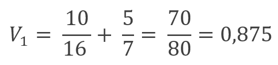
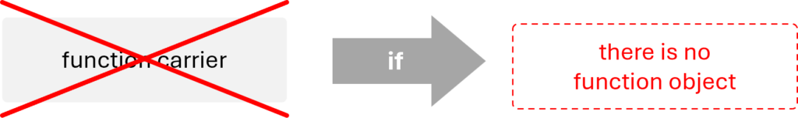

Công cụ xác định vấn đề

Mục tiêu của giai đoạn đầu tiên trong dự án là phân tích hệ thống kỹ thuật và xác định những vấn đề “đúng” cần giải quyết. Đây là những vấn đề sâu xa, ẩn chứa nguyên nhân gốc rễ thay vì chỉ là triệu chứng và thường không hiển hiện ngay từ đầu.
Kết quả của toàn bộ khối phân tích là danh sách các vấn đề chủ chốt phải được giải quyết trong giai đoạn giải quyết vấn đề để đạt được mục tiêu của dự án.
Theo phương pháp luận MATRIZ, bộ công cụ xác định vấn đề bao gồm:
- phân tích chức năng-chi phí,
- phân tích dòng chảy,
- phân tích chuỗi nhân quả (CECA),
- cắt gọn (trimming),
- chuyển giao đặc tính,
- phân tích đường cong chữ S, và
- phân tích xu hướng tiến hóa hệ thống kỹ thuật (TESE).
Một công cụ cũng thường được sử dụng ở giai đoạn này là so sánh chuẩn sáng tạo (innovative benchmarking).
Việc lựa chọn công cụ và thứ tự sử dụng luôn phải được điều chỉnh cho phù hợp với mục tiêu dự án. Những dự án hướng đến phát triển giải pháp mới có khả năng được cấp bằng sáng chế có thể được triển khai khác so với các dự án tập trung cải tiến hệ thống hiện hữu.
Bài viết
- Phân tích chức năng-chi phí
- Phân tích chức năng
- Phân tích thành phần
- Thành phần
- Hệ thống kỹ thuật
- Mô hình thành phần
- Siêu hệ thống
- Phân tích tương tác
- Tương tác
- Ma trận tương tác
- Mô hình hóa chức năng
- Chức năng
- Chức năng chính
- Thành phần mục tiêu
- Nhược điểm chức năng
- Thứ hạng chức năng
- Chức năng cơ bản
- Chức năng bổ sung
- Chức năng phụ trợ
- Chức năng sản xuất
- Chức năng cung cấp
- Chức năng hỗ trợ
- Chức năng vận chuyển
- Chức năng đo lường
- Chức năng hiệu chỉnh
- Khuyết tật
- Mô hình chức năng
- Phân tích giá trị
- Giá trị
- Hệ thống lý tưởng
- Chỉ số chức năng
- Giá trị
- Phân tích thành phần
- Phân tích chi phí
- Sơ đồ chức năng-chi phí
- Phân tích chức năng
- Phân tích dòng chảy
- Nhược điểm dòng chảy
- Dòng chảy
- Phân tích chuỗi nhân quả
- Nhược điểm then chốt
- Nhược điểm ban đầu
- Vòng luẩn quẩn
- Cắt gọn
- Các quy tắc cắt gọn
- Mô hình cắt gọn
- Cắt gọn từng phần
- Bài toán cắt gọn
- Chuyển giao đặc tính
- Hệ thống trung tính (hệ thống trơ)
- Hệ thống cơ sở
- Hệ thống thay thế
- Hệ thống cạnh tranh
- Bài toán chuyển giao đặc tính
- Vấn đề then chốt
- Phân tích đường cong chữ S
- So sánh chuẩn sáng tạo
Phân tích chức năng-chi phí
Phân tích chức năng-chi phí
Tổng quan
Thuật ngữ phân tích chức năng-chi phí đôi khi được dùng đồng nghĩa với phân tích chức năng. Về mặt kỹ thuật, nên coi đây là phân tích chức năng được bổ sung bởi bước phân tích chi phí ở giai đoạn cuối.
Phân tích này thường được thực hiện khi mục tiêu dự án là giảm chi phí. Nó giúp xác định các nhược điểm về chức năng và nhược điểm về chi phí, những yếu tố sau đó sẽ được dùng làm viên gạch xây dựng cho CECA. Công cụ cũng hỗ trợ ra quyết định xem thành phần nào nên được đưa vào diện xem xét cắt gọn.
Phân tích chức năng-chi phí thường được trình bày bằng cách bổ sung một cột vào bảng mô hình chức năng. Nếu dự án liên quan đến xây dựng chiến lược đổi mới, kết quả của nó cũng có thể được minh họa bằng sơ đồ chức năng-chi phí.
Công cụ này không nên bị nhầm lẫn với phân tích giá trị. Phân tích giá trị liên quan đến việc tính toán định lượng giá trị của các thành phần dựa trên sơ đồ chức năng-chi phí, qua đó thể hiện mức độ hữu dụng của kết quả phân tích chức năng-chi phí.
Bài viết
- Phân tích chức năng
- Phân tích thành phần
- Thành phần
- Hệ thống kỹ thuật
- Mô hình thành phần
- Siêu hệ thống
- Phân tích tương tác
- Tương tác
- Ma trận tương tác
- Mô hình hóa chức năng
- Chức năng
- Chức năng chính
- Thành phần mục tiêu
- Nhược điểm chức năng
- Thứ hạng chức năng
- Chức năng cơ bản
- Chức năng bổ sung
- Chức năng phụ trợ
- Chức năng sản xuất
- Chức năng cung cấp
- Chức năng hỗ trợ
- Chức năng vận chuyển
- Chức năng đo lường
- Chức năng hiệu chỉnh
- Khuyết tật
- Mô hình chức năng
- Phân tích giá trị
- Giá trị
- Hệ thống lý tưởng
- Chỉ số chức năng
- Giá trị
- Phân tích thành phần
- Phân tích chi phí
- Sơ đồ chức năng-chi phí
Phân tích chức năng
Phân tích chức năng
Phân tích chức năng là công cụ phân tích nhằm xác định các chức năng, đặc tính của chúng và chi phí của hệ thống cùng các thành phần của siêu hệ thống.
Tổng quan
Mọi hệ thống kỹ thuật đều được thiết kế để thực hiện một hoặc một số chức năng chính cụ thể. Khả năng này là kết quả của những chức năng do từng thành phần của hệ thống kỹ thuật đảm nhiệm. Phân tích chức năng bao gồm việc xác định và mô tả các chức năng này, khiến nó trở thành nền tảng cho hầu hết các công cụ xác định vấn đề và giải quyết vấn đề trong TRIZ.
Kết quả của công cụ này gồm:
- mô hình chức năng của hệ thống,
- danh sách các nhược điểm chức năng.
Phân tích chức năng không cung cấp thông tin mới về hệ thống được phân tích, cũng không đề xuất giải pháp, nhưng lại tối quan trọng để dự án thành công. Nó sắp xếp và chuyển đổi thông tin về hệ thống sang ngôn ngữ chức năng, từ đó cho phép áp dụng hiệu quả các công cụ giải quyết vấn đề.
Phân tích chức năng, khi được bổ sung phân tích chi phí, giúp xây dựng chiến lược phát triển hệ thống. Công cụ hỗ trợ xác định thành phần nào nên cắt gọn, thành phần nào cần cải tiến và thành phần nào nên giữ nguyên.
Các loại phân tích chức năng
Phân tích chức năng được phân thành:
- phân tích chức năng của thiết bị, và
- phân tích chức năng của quy trình.
Cả hai đều nhằm xây dựng mô hình chức năng của hệ thống và chỉ ra các nhược điểm chức năng. Dù có nhiều điểm tương đồng, vẫn tồn tại một số khác biệt quan trọng giữa chúng.
| giai đoạn | phân tích chức năng của thiết bị | phân tích chức năng của quy trình |
| phân tích thành phần | chia hệ thống thành các thành phần là chất, trường hoặc kết hợp cả hai | chia hệ thống thành các thành phần là các thao tác |
| phân tích tương tác | xác định các tương tác giữa các thành phần | không thực hiện |
| mô hình hóa chức năng | xác định các chức năng được thực hiện giữa các thành phần tương tác | xác định các chức năng được thực hiện trong các thao tác |
| xếp hạng chức năng đã xác định thành cơ bản, bổ sung hoặc phụ trợ | xếp hạng chức năng đã xác định thành sản xuất, cung cấp (hỗ trợ, vận chuyển, đo lường) hoặc hiệu chỉnh |
Phân tích chức năng của thiết bị
Tổng quan
Phân tích chức năng của thiết bị được áp dụng cho các hệ thống kỹ thuật có tập hợp thành phần cố định theo thời gian, chẳng hạn máy móc, thiết bị, dụng cụ…
Các giai đoạn phân tích
Phân tích chức năng của thiết bị gồm ba giai đoạn:
- phân tích thành phần,
- phân tích tương tác, và
- mô hình hóa chức năng.

Ở mỗi giai đoạn, thông tin được thu thập để xác nhận một trong ba điều kiện để chức năng xảy ra. Trước hết tạo danh sách thành phần, vì cả chủ thể chức năng lẫn đối tượng chức năng đều phải là thành phần của hệ thống hoặc siêu hệ thống. Tiếp theo xác định cặp thành phần nào có tương tác. Cuối cùng, với mỗi cặp, kiểm tra xem một thành phần có thay đổi hoặc chủ đích duy trì tham số nào của thành phần kia hay không.
Thuật toán phân tích chức năng của thiết bị
Thuật toán phân tích chức năng của thiết bị như sau:
- Xác định ranh giới hệ thống, chức năng chính và thành phần mục tiêu.
- Thực hiện phân tích thành phần:
- xác định tất cả thành phần hệ thống, ghi nhớ việc giữ đúng hệ phân cấp và không tách nhỏ khi không cần thiết,
- xác định các thành phần siêu hệ thống liên quan; đừng bỏ qua những thành phần có thể cung cấp tài nguyên miễn phí,
- liệt kê toàn bộ thành phần đã xác định, ví dụ ở dạng bảng.
- Thực hiện phân tích tương tác:
- tạo mẫu ma trận tương tác với số cột và số hàng tương ứng với tổng số thành phần đã xác định,
- điền tên các thành phần vào tiêu đề cột và hàng theo cùng thứ tự,
- kiểm tra để biết liệu cặp thành phần nào trong ma trận có tương tác; ghi kết quả phân tích – ký hiệu “+” nếu có tương tác, “–” nếu không,
- kiểm tra ma trận tương tác có đối xứng qua đường chéo từ góc trên trái xuống góc dưới phải hay không.
- Thực hiện mô hình hóa chức năng:
- kiểm tra xem với mỗi tương tác đã xác định có tồn tại chức năng tương ứng hay không,
- xác định loại của từng chức năng,
- xác định mức độ thực hiện của các chức năng hữu ích,
- xếp hạng chức năng (nếu cần),
- tính chỉ số chức năng của các thành phần hệ thống kỹ thuật (nếu cần),
- tính giá trị của từng thành phần hệ thống kỹ thuật (nếu cần).
Phân tích chức năng của quy trình
Tổng quan
Phân tích chức năng của quy trình được áp dụng cho các hệ thống kỹ thuật mà tập hợp thành phần thay đổi theo thời gian, tức một số thành phần xuất hiện còn những thành phần khác biến mất khỏi hệ thống.
Đây là công cụ phân tích khá phổ quát. Trong phương pháp luận MATRIZ, nó được xây dựng để xử lý các quy trình công nghệ. Tuy nhiên, với những điều chỉnh phù hợp, công cụ có thể áp dụng cho mọi quy trình có thể biểu diễn thành chuỗi bước, như quy trình hành chính, quản lý, logistics…
Các giai đoạn
Phân tích chức năng của quy trình gồm hai giai đoạn:
- phân tích thành phần, và
- mô hình hóa chức năng.
Lưu ý rằng trái với thiết bị, phân tích tương tác không được thực hiện cho quy trình. Trong TRIZ, tương tác được hiểu là tiếp xúc vật lý, và vì giữa các thành phần của quy trình (các thao tác) không có tiếp xúc vật lý, nên không có tương tác để phân tích.
Bước đầu tiên trong phân tích quy trình là xác định tất cả thành phần liên quan của hệ thống. Tuy nhiên khái niệm thành phần lúc này thay đổi – chúng không còn là chất và/hoặc trường mà là các thao tác cấu thành quy trình. Thêm vào đó, thành phần mục tiêu và các thành phần siêu hệ thống gần như không được sử dụng ở đây. Về mặt kỹ thuật chúng tồn tại, nhưng về bản chất không được dùng tích cực.
Bước thứ hai và cũng là cuối cùng trong phân tích chức năng của quy trình là mô hình hóa chức năng. Do đặc thù của hệ thống, các chức năng không còn được xác định giữa các thành phần mà bên trong chính các thành phần, tức các thao tác.
Thuật toán phân tích chức năng của quy trình
Thuật toán phân tích chức năng của quy trình như sau:
- Xác định ranh giới quy trình, chức năng chính và sản phẩm cuối cùng.
- Thực hiện phân tích thành phần:
- xác định tất cả các thao tác của quy trình; nhớ giữ đúng hệ phân cấp và không chia nhỏ khi không cần thiết,
- xác định các thao tác siêu hệ thống liên quan; lưu ý cân nhắc các thao tác có thể cung cấp tài nguyên miễn phí,
- liệt kê toàn bộ thành phần đã xác định, ví dụ ở dạng bảng.
- Thực hiện mô hình hóa chức năng:
- xác định các chức năng được thực hiện trong từng thao tác,
- xác định loại của từng chức năng,
- xếp hạng các chức năng,
- tính chỉ số chức năng của các thành phần hệ thống kỹ thuật (nếu cần),
- tính giá trị của từng thành phần hệ thống kỹ thuật (nếu cần).
Bài viết
- Phân tích thành phần
- Thành phần
- Hệ thống kỹ thuật
- Mô hình thành phần
- Siêu hệ thống
- Phân tích tương tác
- Tương tác
- Ma trận tương tác
- Mô hình hóa chức năng
- Chức năng
- Chức năng chính
- Thành phần mục tiêu
- Nhược điểm chức năng
- Thứ hạng chức năng
- Chức năng cơ bản
- Chức năng bổ sung
- Chức năng phụ trợ
- Chức năng sản xuất
- Chức năng cung cấp
- Chức năng hỗ trợ
- Chức năng vận chuyển
- Chức năng đo lường
- Chức năng hiệu chỉnh
- Khuyết tật
- Mô hình chức năng
- Phân tích giá trị
- Giá trị
- Hệ thống lý tưởng
- Chỉ số chức năng ##### Phân tích thành phần
- Giá trị
Phân tích thành phần
Phân tích thành phần là giai đoạn trong phân tích chức năng nhằm xác định các thành phần của hệ thống kỹ thuật và siêu hệ thống của nó.
Tổng quan
Phân tích thành phần là điểm khởi đầu của phân tích chức năng, áp dụng cho cả thiết bị lẫn quy trình. Mục tiêu là xác định mọi thành phần của hệ thống kỹ thuật và các thành phần liên quan của siêu hệ thống.
Đầu ra của phân tích là mô hình thành phần, đóng vai trò đầu vào cho phân tích tương tác khi phân tích thiết bị và cho mô hình hóa chức năng khi phân tích quy trình.
Xác định ranh giới hệ thống
Trước khi tiến hành phân tích thành phần, việc xác định ranh giới hệ thống là rất quan trọng. Chúng đóng vai trò then chốt trong giai đoạn mô hình hóa chức năng vì ảnh hưởng đáng kể đến việc xếp hạng chức năng.
Đối với thiết bị, ranh giới giữa hệ thống và siêu hệ thống giúp xác định trạng thái thành phần, tức thành phần nào thuộc hệ thống và thành phần nào thuộc siêu hệ thống. Ngoài ra, chức năng chính chỉ có thể được xác định khi ranh giới đã rõ ràng – khi ranh giới thay đổi, chức năng chính và thành phần mục tiêu cũng có thể thay đổi theo.
Trong các quy trình, thành phần siêu hệ thống không đóng vai trò tích cực trong phân tích chức năng; tuy nhiên cách chúng ta xác định ranh giới vẫn có thể tác động trực tiếp đến thứ hạng chức năng.
Phân tích thành phần cho thiết bị
Quy trình thực hiện
Quy trình phân tích thành phần cho thiết bị như sau:
- xác lập ranh giới hệ thống,
- xác định tất cả thành phần của hệ thống và thành phần siêu hệ thống liên quan (xem Khuyến nghị),
- xây dựng mô hình thành phần ở dạng phù hợp.
Khuyến nghị
Việc lựa chọn mức phân cấp phụ thuộc vào mục tiêu và ràng buộc dự án. Phân tích nên được thực hiện ở mức mà các thành phần có liên kết trực tiếp tới vấn đề. Trong một số trường hợp, cần tách thành phần thành các phần nhỏ hơn để tăng độ rõ ràng.
Với các thành phần siêu hệ thống, chỉ chọn những thành phần liên quan đến dự án, nhưng không bỏ qua thành phần có thể cung cấp tài nguyên để cải thiện hệ thống, kể cả không khí hay trọng lực.
Khi phân tích thành phần cho thiết bị, thông số kỹ thuật của hệ thống rất hữu ích; tuy nhiên mức độ chi tiết có thể điều chỉnh khi cần. Các thành phần do nhà cung cấp bên ngoài cung cấp, nơi chúng ta không kiểm soát thiết kế hoặc không được phép thiết kế lại, nên được đưa vào như một cụm lắp ráp duy nhất mà không cần phân tích chi tiết.
Phân tích thành phần cho quy trình
Trong phân tích chức năng của quy trình, phân tích thành phần là giai đoạn mà quy trình được chia thành các thao tác – chính là thành phần của nó.
Các thao tác thường được thực hiện tuần tự:
Chúng cũng có thể diễn ra song song:
Dù thực hiện song song hay tuần tự, vẫn có thể xuất hiện vòng lặp:
Quy trình thực hiện
Quy trình phân tích thành phần cho quy trình như sau:
- xác lập ranh giới hệ thống,
- xác định tất cả các thao tác của quy trình (xem Khuyến nghị),
- xác định các thao tác siêu hệ thống liên quan, đặc biệt là những thao tác có thể cung cấp tài nguyên miễn phí,
- xây dựng mô hình thành phần ở dạng phù hợp.
Khuyến nghị
Tương tự thiết bị, khi phân tích quy trình, quyết định mức độ chi tiết phụ thuộc vào chúng ta và nên dựa trên mục tiêu dự án. Hệ thống có thể được chia thành các thao tác lớn hoặc nhiều thao tác nhỏ hơn.
Cần nhớ rằng việc có những thao tác chỉ có một chức năng thường không thực tế. Ngược lại, nếu một thao tác chứa quá nhiều chức năng, nó có thể làm phức tạp đáng kể quá trình cắt gọn.
Tài liệu quy trình hiện có như quy trình vận hành chuẩn (SOP), sơ đồ dòng chảy, thông số kỹ thuật thiết bị hoặc lưu đồ chuyển hóa là nguồn dữ liệu rất hữu ích cho phân tích thành phần. Phỏng vấn nhân viên vận hành, bảo trì hoặc giám sát quy trình cũng đem lại nhiều hiểu biết giá trị. Cuối cùng, dành thời gian tại hiện trường, quan sát quy trình hoạt động, phân tích dữ liệu lịch sử… cũng rất đáng giá vì cách tiếp cận thực tế này có thể hé lộ những điểm khác biệt so với tài liệu.
Bài viết
- Thành phần
- Hệ thống kỹ thuật
- Mô hình thành phần
- Siêu hệ thống
Thành phần
Thành phần
Thành phần là đối tượng vật chất cấu thành một phần của hệ thống kỹ thuật hoặc siêu hệ thống của nó.
Tổng quan
Theo quy ước, thành phần được hiểu là bộ phận cấu thành hệ thống kỹ thuật hoặc siêu hệ thống. Tuy nhiên cần nhấn mạnh rằng có sự khác biệt đáng kể giữa thành phần được hiểu như các bộ phận của thiết bị và những thành phần tạo nên quy trình.
Đối với cả hai loại hệ thống, các thành phần được xác định trong giai đoạn phân tích thành phần – bước đầu tiên của phân tích chức năng.
Thành phần của thiết bị
Thành phần của thiết bị có thể là:
- chất, tức đối tượng có khối lượng nghỉ;
- trường, đối tượng không có khối lượng nghỉ dùng để truyền tương tác giữa các chất; hoặc
- sự kết hợp giữa chất và trường.
Một vài ví dụ:
- chất:
- bánh xe (của ô tô)
- vít
- không khí
- người vận hành
- trường:
- trọng lực
- ánh sáng (trường điện từ)
- dòng điện
- kết hợp chất và trường:
- bóng đèn cùng ánh sáng phát ra
- radio cùng âm thanh phát ra (trường âm)
- ngôi sao cùng bức xạ của nó
Các đối tượng sinh học cũng có thể là thành phần, ví dụ:
thành phần hệ thống:
- người vận hành (trong thang máy để di chuyển vật),
- vi sinh vật (trong bể phản ứng sinh học để tạo khí sinh học),
- hoa (trang trí tạo sự hứng thú cho con người),
thành phần siêu hệ thống:
- heo (đối với xe tải chở gia súc),
- tim (đối với máy khử rung),
- cỏ (đối với máy cắt cỏ).
Trường trong TRIZ
Trong TRIZ, khái niệm trường được mở rộng vượt ra ngoài định nghĩa khoa học truyền thống và bao gồm bất kỳ tương tác nào giữa các thành phần hệ thống, không chỉ các trường cổ điển như trọng lực và điện từ. Thuật ngữ trường được sử dụng dưới góc nhìn kỹ thuật để thúc đẩy quá trình phát ý tưởng. Các trường đại diện cho dạng tương tác khác nhau có thể xảy ra giữa các chất trong hệ thống.
Việc phân loại trường đã dẫn đến sự phát triển của MATChEM – từ viết tắt đại diện cho sáu loại trường:
- cơ học: các tương tác được cảm nhận như năng lượng cơ học, ví dụ trọng lực, ma sát, lực ly tâm, rung động…
- âm học: các tương tác âm thanh như âm thanh nghe thấy, siêu âm, sóng địa chấn, cộng hưởng…
- nhiệt: các tương tác liên quan đến nhiệt độ, ví dụ đun nóng, làm lạnh, chuyển pha…
- hóa học: các tương tác và phản ứng như oxy hóa, trùng hợp, tổng hợp, sử dụng chất xúc tác hoặc chất ức chế…
- điện: các hiện tượng dựa trên điện, ví dụ dòng điện Foucault, điện tích tĩnh, ion hóa, hiệu ứng áp điện…
- từ: chủ yếu là các trường từ.
Hai chữ cái cuối (EM) cũng có thể đại diện cho điện từ và đề cập đến các hiện tượng như vi sóng, tia X, ánh sáng hoặc màu sắc.
Thành phần của quy trình
Thành phần của quy trình là một thao tác.
Thao tác là tập hợp các chức năng trong quy trình công nghệ được nhóm lại vì những cân nhắc nhất định.
Ví dụ về thành phần quy trình:
hệ thống: làm bột pizza
- trộn nguyên liệu,
- nhào bột,
- ủ bột,
- tạo hình,
- cán và kéo dãn bột.
hệ thống: phản ứng trùng hợp trong lò phản ứng
- nạp monomer,
- bổ sung chất xúc tác,
- theo dõi phản ứng,
- hình thành polymer,
- khuấy trộn,
- lấy sản phẩm,
- xử lý sau phản ứng.
hệ thống: quy trình lên men
cấy giống (đưa vi sinh vật vào),
bổ sung dinh dưỡng,
sục khí,
khuấy trộn,
lên men,
quản lý khí,
lấy mẫu,
thu hoạch,
vệ sinh và tiệt trùng.
Thẻ:
trường
matchem
chất
Hệ thống kỹ thuật
Hệ thống kỹ thuật
Hệ thống kỹ thuật (công nghệ) là hệ thống được phát triển để thực hiện một chức năng.
Tổng quan
Hệ thống kỹ thuật và hệ thống công nghệ được sử dụng thay thế cho nhau trong TRIZ.
Chức năng mà hệ thống được thiết kế để thực hiện gọi là chức năng chính. Một hệ thống không thực hiện chức năng chính thì không thể tồn tại, nhưng có rất nhiều hệ thống thực hiện nhiều chức năng chính cùng lúc.
Việc xác định ranh giới hệ thống kỹ thuật là bước quan trọng trong bất kỳ dự án nào. Ranh giới được xác định bởi mục tiêu và ràng buộc của dự án. Chúng phụ thuộc vào những gì cần thiết và khả thi trong phạm vi ngân sách cùng các đặc thù khác. Mọi thứ ngoài ranh giới, bao gồm môi trường xung quanh, được gọi là siêu hệ thống.
Việc xác định ranh giới rất quan trọng vì:
- chức năng chính chỉ có thể xác định khi ranh giới rõ ràng – khi ranh giới thay đổi, chức năng chính và thành phần mục tiêu cũng có thể thay đổi,
- ranh giới quyết định thành phần nào thuộc hệ thống và thành phần nào thuộc siêu hệ thống,
- thứ hạng chức năng phụ thuộc vào chức năng chính – vì ranh giới hệ thống kỹ thuật được xác định bởi mục tiêu và ràng buộc dự án, chúng có thể phụ thuộc vào phần nào của thiết bị nằm trong phạm vi dự án (được phép thiết kế lại, được chi trả trong ngân sách…).
Hệ thống kỹ thuật cũng có thể bao gồm các hệ thống con hoặc thành phần do tự nhiên tạo ra, cả hữu cơ (thực vật, động vật, con người) và vô cơ (khoáng chất, nước…).
Các loại hệ thống kỹ thuật
Nhìn chung, trong TRIZ xét đến hai loại hệ thống kỹ thuật:
- thiết bị, và
- quy trình.
Thiết bị như một hệ thống kỹ thuật
Thiết bị được hiểu là hệ thống có tập hợp thành phần nhất định không thay đổi theo thời gian. Tham số của chúng có thể thay đổi, nhưng không có thành phần nào xuất hiện, biến mất hoặc hợp nhất. Thiết bị có thể là máy móc, thiết bị, dụng cụ…
Ví dụ:
- ô tô,
- máy tính,
- bàn,
- sách,
- máy điều hòa…
Quy trình như một hệ thống kỹ thuật
Quy trình công nghệ là quy trình sử dụng các đối tượng vật chất như nguyên liệu, lao động, năng lượng và máy móc để tạo ra sản phẩm hoàn chỉnh.
Quy trình được hiểu là hệ thống mà tập hợp thành phần thay đổi theo thời gian. Một số thành phần xuất hiện, số khác biến mất khỏi hệ thống. Để mô hình hóa hệ thống như vậy, cần đưa trục thời gian vào:

Ví dụ về hệ thống kỹ thuật có thể coi là quy trình:
- hệ thống băng tải (lắp ráp sản phẩm),
- quy trình trùng hợp,
- buồng đốt (đốt nhiên liệu tạo nhiệt và năng lượng),
- chuyển hóa đường thành rượu hoặc acid trong thùng lên men,
- máy trộn bê tông…
Mô hình thành phần
Mô hình thành phần
Mô hình thành phần là tập hợp các thành phần thuộc hệ thống kỹ thuật được phân tích và siêu hệ thống của nó.
Tổng quan
Mô hình thành phần là đầu ra của phân tích thành phần – bước đầu tiên trong phân tích chức năng đối với cả thiết bị và quy trình. Trong phân tích chức năng của thiết bị, mô hình này là đầu vào cho phân tích tương tác. Trong phân tích chức năng của quy trình, bước phân tích tương tác được bỏ qua và mô hình thành phần (lúc này là các thao tác) đóng vai trò đầu vào cho mô hình hóa chức năng.
Cách trình bày mô hình thành phần
Cách trình bày mô hình thành phần khá linh hoạt.
Trình bày cho thiết bị
Một thực hành tốt là liệt kê các thành phần đã xác định ở dạng bảng. Cột đầu tiên ghi tên hệ thống kỹ thuật, cột thứ hai – các thành phần của hệ thống, và cột thứ ba – các thành phần của siêu hệ thống:
- mô tả hệ thống kỹ thuật,
- thành phần hệ thống,
- thành phần siêu hệ thống.
Trình bày cho quy trình
Đối với quy trình, mô hình thành phần thường được trình bày dưới dạng danh sách các thao tác. Nếu cần thể hiện thao tác tuần tự hay song song, việc tạo sơ đồ sẽ hữu ích, ví dụ:

Siêu hệ thống
Siêu hệ thống
Siêu hệ thống là hệ thống chứa hệ thống kỹ thuật được phân tích như một thành phần.
Tổng quan
Siêu hệ thống là mọi thứ nằm ngoài ranh giới hệ thống kỹ thuật, bao gồm cả môi trường xung quanh.
Nếu hệ thống kỹ thuật là một chiếc ghế, các thành phần của siêu hệ thống có thể là sàn nhà, tường, cửa sổ, không khí, đồ nội thất khác gần đó, người ngồi trên ghế… Nếu hệ thống là mặt ghế, thành phần siêu hệ thống không chỉ gồm sàn, tường, cửa sổ, không khí, người ngồi trên ghế, mà còn chân ghế và tựa lưng. ##### Phân tích tương tác
Phân tích tương tác
Phân tích tương tác là giai đoạn trong phân tích chức năng của thiết bị nhằm xác định các tương tác giữa những thành phần có trong mô hình thành phần.
Tổng quan
Mục đích chính của phân tích tương tác là xác định xem giữa các thành phần trong mô hình thành phần có tồn tại tương tác hay không. Ở giai đoạn này chưa xem xét hậu quả của tương tác; trọng tâm chỉ là sự hiện diện của chúng.
Lưu ý phân tích tương tác chỉ được thực hiện đối với thiết bị. Trong phân tích chức năng của quy trình, bước này bị bỏ qua hoàn toàn vì không tồn tại tương tác giữa các thành phần.
Quy trình
Để tiến hành phân tích tương tác, sử dụng mô hình thành phần đã xây dựng trước đó. Phân tích thường được thực hiện bằng cách tạo ma trận tương tác – đây cũng là đầu ra của giai đoạn này.
Ma trận được tạo theo các bước:
- tạo mẫu ma trận với số cột và hàng tương ứng với số lượng thành phần đã xác định,
- điền tên các thành phần vào tiêu đề cột và hàng theo cùng một thứ tự,
- kiểm tra từng cặp thành phần trong ma trận xem có tương tác hay không; ghi “+” nếu có, “–” nếu không,
- kiểm tra ma trận có đối xứng qua đường chéo từ góc trên trái đến góc dưới phải hay không.
Bài viết
- Tương tác
- Ma trận tương tác
Tương tác
Tương tác
Tương tác là tiếp xúc vật lý giữa các thành phần của hệ thống kỹ thuật và/hoặc các thành phần của siêu hệ thống.
Tổng quan
Tương tác là một trong những thuật ngữ then chốt trong phân tích chức năng đối với thiết bị (không áp dụng cho quy trình), vì nguyên tắc cơ bản là: để tồn tại chức năng giữa hai thành phần, phải có tương tác (tiếp xúc vật lý) giữa chúng.
Việc một tương tác xuất hiện hay không phụ thuộc trực tiếp vào cách xác định thành phần. Việc nhận diện tương tác giữa các thành phần dạng chất thường khá đơn giản – chúng xảy ra khi các thành phần tiếp xúc trực tiếp, dù chỉ tại một điểm.
Nếu thành phần là một trường, ví dụ trường điện từ (ánh sáng), thì tồn tại tương tác vật lý giữa trường đó với bộ phát (ví dụ bóng đèn) cũng như giữa trường đó với bộ thu (ví dụ người quan sát). Tuy nhiên, trong trường hợp này, bộ phát (bóng đèn) và bộ thu (người) không tương tác trực tiếp với nhau.
Nếu thành phần được định nghĩa là sự kết hợp giữa chất và trường (ví dụ bóng đèn cùng trường điện từ phát ra), thì sẽ tồn tại tương tác với bộ thu (bóng đèn “tiếp xúc” với người thông qua ánh sáng).
Các tương tác giữa thành phần được xác định trong giai đoạn phân tích tương tác – bước thứ hai của phân tích chức năng đối với thiết bị. Chúng được ghi lại dưới dạng ma trận tương tác và sau đó được dùng làm đầu vào cho mô hình hóa chức năng – giai đoạn cuối cùng của phân tích.
Ma trận tương tác
Ma trận tương tác
Ma trận tương tác là bảng thể hiện các tương tác giữa những thành phần của hệ thống kỹ thuật và siêu hệ thống. Đây là kết quả của phân tích tương tác.
Tổng quan
Ma trận tương tác là đầu ra của phân tích tương tác được thực hiện trong phân tích chức năng của thiết bị. Thông thường ma trận được trình bày dưới dạng bảng, trong đó dữ liệu đầu vào chính là các thành phần đã xác định ở phân tích thành phần. Việc hoàn thiện chính xác ma trận này là điều kiện quan trọng để thực hiện giai đoạn tiếp theo – mô hình hóa chức năng.
Xây dựng ma trận tương tác
Ma trận tương tác được tạo dựa trên mô hình thành phần. Các bước thực hiện:
- Tạo ma trận có số hàng và số cột bằng với tổng số thành phần đã xác định trong phân tích thành phần.
- Ghi tên các thành phần vào tiêu đề cột và hàng theo cùng một thứ tự. Khuyến nghị sắp xếp theo thứ tự:
- thành phần mục tiêu của hệ thống,
- các thành phần của hệ thống,
- các thành phần của siêu hệ thống.
- Trong ma trận, ghi “+” nếu có tương tác và “–” nếu không.

Ma trận tương tác phải đối xứng qua đường chéo từ góc trên trái đến góc dưới phải. Nếu thành phần 1 tương tác với thành phần 2, thì thành phần 2 cũng phải tương tác với 1. Tính đối xứng này xuất phát từ việc ma trận sử dụng cùng một tập thành phần cho cả hàng và cột theo cùng thứ tự, khiến mọi tương tác đều mang tính hai chiều.
Khi xây dựng ma trận tương tác, cần đánh giá chính xác sự tồn tại của tương tác. Đánh dấu sai có thể ảnh hưởng đến kết quả của toàn bộ phân tích chức năng.
Nếu một tương tác không tồn tại nhưng bị đánh dấu “+”, quá trình phân tích có thể kéo dài vì tương tác đó sẽ tiếp tục được xem xét sau này. Tuy nhiên, nếu bỏ sót một tương tác thực sự, hậu quả nghiêm trọng hơn: có thể bỏ lỡ chức năng, dẫn đến phân tích không đầy đủ và kết luận sai. Trong trường hợp không chắc chắn, nên sử dụng dấu “+” để đảm bảo mọi tương tác tiềm năng đều được xem xét.
Mô hình hóa chức năng
Mô hình hóa chức năng
Mô hình hóa chức năng là giai đoạn trong phân tích chức năng, trong đó mô hình chức năng của hệ thống kỹ thuật được xây dựng.
Tổng quan
Mô hình hóa chức năng là giai đoạn cuối cùng của phân tích chức năng đối với cả thiết bị và quy trình. Giai đoạn này tạo ra mô hình chức năng dưới dạng bảng, sơ đồ hoặc kết hợp cả hai.
Nếu mục tiêu dự án là giảm chi phí, mô hình hóa chức năng được bổ sung bằng phân tích chi phí, cung cấp thông tin quan trọng về các thành phần. Một mặt, nó giúp xác định nhược điểm về chi phí; mặt khác, hỗ trợ quyết định thành phần nào nên xem xét cắt gọn. Phân tích chức năng-chi phí thường được trình bày bằng cách thêm một cột vào bảng mô hình chức năng.
Khác biệt giữa mô hình hóa chức năng cho thiết bị và cho quy trình
Mô hình hóa chức năng là giai đoạn mà hai loại phân tích khác nhau rõ nét nhất.
Dữ liệu đầu vào
Đối với thiết bị, đầu vào cho mô hình hóa chức năng là ma trận tương tác, cụ thể là các ô có dấu “+”. Do tương tác là điều kiện cơ bản để chức năng tồn tại, chỉ những cặp thành phần có tương tác mới được xem xét; các ô “–” bị bỏ qua. Với mỗi ô chứa dấu “+”, tiến hành phân tích để kiểm tra xem tương tác giữa các thành phần có đại diện cho một chức năng hay không. Thành phần ở trục dọc được xem là chủ thể chức năng, còn thành phần ở trục ngang là đối tượng chức năng.
Đối với quy trình, vì không thực hiện phân tích tương tác nên đầu vào cho mô hình hóa chức năng là mô hình thành phần được xây dựng ở bước phân tích thành phần.
Mối quan hệ giữa chức năng và thành phần
Ở cả hai loại phân tích, khái niệm chức năng không thay đổi; tuy nhiên vai trò của thành phần thì khác nhau.
Với thiết bị, cả chủ thể lẫn đối tượng của chức năng đều là các thành phần đã xác định trước đó:
Với quy trình, chức năng được thực hiện bên trong các thành phần (các thao tác), nghĩa là cả chủ thể lẫn đối tượng đều không phải là thành phần – chúng chính là các hoạt động trong quy trình đó:

Xếp hạng chức năng
Đối với thiết bị, một chức năng có thể có ba cấp bậc, phụ thuộc vào trạng thái của đối tượng. Giá trị cao nhất thuộc về chức năng hướng đến thành phần mục tiêu. Các chức năng tác động lên thành phần của siêu hệ thống có thứ hạng thấp hơn một chút. Cuối cùng, thấp nhất là chức năng tác động lên các thành phần của hệ thống.
Trong quy trình, do không sử dụng trực tiếp thành phần mục tiêu và thành phần siêu hệ thống, việc xếp hạng dựa trên tiêu chí khác.
Quy trình
Quy trình mô hình hóa chức năng cho thiết bị
Đối với thiết bị, mô hình hóa chức năng được thực hiện theo các bước:
- kiểm tra xem với mỗi tương tác đã xác định có chức năng nào được thực hiện không,
- xác định từng chức năng là hữu ích hay có hại,
- xác định mức độ thực hiện của chức năng hữu ích,
- xếp hạng chức năng (nếu cần),
- tính chỉ số chức năng của các thành phần hệ thống kỹ thuật (nếu cần),
- tính giá trị của từng thành phần (nếu cần).
Quy trình mô hình hóa chức năng cho quy trình
Đối với quy trình, các bước như sau:
- xác định chức năng được thực hiện trong từng thao tác,
- xác định từng chức năng là hữu ích hay có hại,
- xếp hạng các chức năng hữu ích,
- tính chỉ số chức năng của từng thao tác (nếu cần),
- tính giá trị của từng thao tác (nếu cần).
Bài viết
- Chức năng
- Chức năng chính
- Thành phần mục tiêu
- Nhược điểm chức năng
- Thứ hạng chức năng
- Chức năng cơ bản
- Chức năng bổ sung
- Chức năng phụ trợ
- Chức năng sản xuất
- Chức năng cung cấp
- Chức năng hỗ trợ
- Chức năng vận chuyển
- Chức năng đo lường
- Chức năng hiệu chỉnh
- Khuyết tật
- Mô hình chức năng
Chức năng
Chức năng
Chức năng là hành động được một đối tượng vật chất (chủ thể chức năng) thực hiện để thay đổi hoặc duy trì một tham số của đối tượng vật chất khác (đối tượng của chức năng).
Tổng quan
Trong TRIZ, chức năng giữ vai trò đặc biệt quan trọng. Một trong những nguyên lý cốt lõi của phương pháp luận này là tách chức năng khỏi chủ thể thực hiện. Trong thực tế, điều đó có nghĩa là miễn là chức năng được thực hiện, thành phần nào thực hiện nó không quan trọng. Cách tiếp cận này giúp chúng ta vượt qua giới hạn và khám phá các giải pháp sáng tạo.
Các yếu tố của chức năng
Chức năng gồm 3 yếu tố:
- chủ thể chức năng, tức một chất và/hoặc trường thực hiện hành động,
- đối tượng chức năng, tức đối tượng chịu tác động,
- động từ mô tả hành động được thực hiện.
{kind=link}
Các chức năng được xác định trong quá trình phân tích chức năng, cụ thể là ở giai đoạn cuối – mô hình hóa chức năng.
Điều kiện để chức năng tồn tại
Để một chức năng được coi là được thực hiện, các điều kiện sau phải được đáp ứng:
- cả chủ thể lẫn đối tượng chức năng đều là các chất và/hoặc trường,
- chủ thể chức năng tương tác với đối tượng,
- hành động của chủ thể làm thay đổi hoặc duy trì (giữ nguyên) một tham số của đối tượng; nếu không xác định được tham số đó thì không tồn tại chức năng.
Lưu ý một chức năng chỉ có thể thay đổi một tham số của đối tượng. Nếu chủ thể thay đổi nhiều tham số, có nghĩa nó thực hiện nhiều chức năng.
Ví dụ:
- búa di chuyển đinh (thay đổi vị trí trong không gian),
- kính hội tụ ánh sáng (thay đổi hướng),
- sách cung cấp thông tin cho người đọc (thay đổi phạm vi kiến thức).
Bảng dưới minh họa cách diễn đạt sai và đúng về chức năng:
| diễn đạt sai (không chỉ ra tham số thay đổi → không có chức năng) | diễn đạt đúng |
| kính râm bảo vệ mắt | kính râm định hướng ánh sáng |
| máy hút bụi làm sạch thảm | máy hút bụi loại bỏ bụi |
| máy sấy làm khô quần áo | máy sấy loại bỏ nước |
| thước đo chiều dài | thước cung cấp thông tin cho người |
| đèn chiếu sáng sách | đèn tạo ra ánh sáng |
| khoan tạo lỗ trên ván | khoan thay đổi hình dạng của tấm ván |
Đánh giá chức năng
Chức năng được đánh giá theo:
- tính hữu ích (phân loại),
- mức độ thực hiện, và
- tầm quan trọng (thứ hạng).
Các kết quả đánh giá được sử dụng trong các bước tiếp theo của quy trình phân tích. Phân loại và mức độ thực hiện giúp xác định nhược điểm chức năng – đầu vào cho phân tích chuỗi nhân quả (CECA). Thứ hạng chức năng đặc biệt quan trọng trong cắt gọn.
Phân loại chức năng
Trong TRIZ hiện đại, có hai loại chức năng:
- chức năng hữu ích, và
- chức năng có hại.
Chức năng hữu ích là chức năng mà chủ thể thực hiện dẫn tới thay đổi mong muốn (cần thiết) hoặc duy trì tham số của đối tượng.
Chức năng có hại là chức năng mà chủ thể thực hiện dẫn tới thay đổi không thể chấp nhận hoặc duy trì không mong muốn tham số của đối tượng.
Nói cách khác, nếu tham số thay đổi theo hướng mong muốn → chức năng hữu ích; nếu thay đổi theo hướng không mong muốn → chức năng có hại.
Bản thân chức năng không tự nhiên là hữu ích hay có hại – điều này phụ thuộc vào bối cảnh cụ thể. Ví dụ: không khí nóng làm chảy nhựa là hữu ích nếu mục tiêu là tăng độ dẻo, nhưng là có hại nếu cần giữ độ cứng.
Mức độ thực hiện
Mức độ thực hiện chỉ áp dụng cho chức năng hữu ích. Với chức năng có hại, không xem xét mức độ; bản thân chúng đã là nhược điểm chức năng.
Mức độ thực hiện cho biết chức năng hữu ích được thực hiện đúng mức (trong các tham số dự kiến, như thiết kế) hay quá mức hoặc không đủ. Thực hiện quá mức hoặc không đủ đều được xem là nhược điểm chức năng.
Mức độ thực hiện có thể minh họa bằng ví dụ phanh vành xe đạp. Mục đích của nó là giữ lốp để dừng xe êm và hiệu quả. Nếu phanh bóp quá chặt, xe dừng đột ngột gây nguy hiểm. Nếu phanh quá lỏng, quãng đường phanh dài, tăng nguy cơ tai nạn.
Thứ hạng chức năng
Thứ hạng chức năng được thực hiện khi cần phát triển chiến lược đổi mới. Việc xếp hạng gồm xác định loại chức năng rồi gán số điểm phù hợp.
Trong khi phân loại và mức độ thực hiện giống nhau cho mọi hệ thống kỹ thuật, thứ hạng chức năng lại hoàn toàn khác giữa thiết bị và quy trình. Bảng dưới trình bày:
| thứ hạng cho thiết bị | thứ hạng cho quy trình | điểm |
| chức năng cơ bản | chức năng sản xuất | 3 |
| chức năng bổ sung | chức năng cung cấp | 2 |
| chức năng phụ trợ | chức năng hiệu chỉnh | 1 |
Thứ hạng đóng vai trò đặc biệt quan trọng đối với cắt gọn trong quy trình, vì loại chức năng quyết định quy tắc cắt gọn nào sẽ được áp dụng.
Mẹo diễn đạt chức năng
Một số gợi ý khi diễn đạt chức năng:
- Diễn đạt ở dạng khẳng định – không làm gì đó không phải là chức năng, áp dụng cho cả chức năng hữu ích và có hại.
- Tránh các từ khai báo (như cung cấp, bảo vệ, tìm kiếm) – chúng không thay đổi hay duy trì tham số nên không tạo thành chức năng.
- Cụ thể tối đa.
- Nếu không thể mô tả bằng một động từ, hãy dùng công thức: Thành phần A thay đổi/duy trì tham số X của thành phần B.
- Chủ thể không thể thực hiện chức năng lên chính nó. Nếu gặp tình huống đó, hãy tách đối tượng thành hai phần – một phần làm chủ thể, phần kia làm đối tượng.
Chức năng như mô hình của vấn đề
Một chức năng khái quát có thể được sử dụng như tiêu chí chính để xác định các công nghệ trên toàn thế giới. Bằng cách rút gọn chức năng về dạng phổ quát, ta có thể tìm ra công nghệ thực hiện các chức năng tương tự trong nhiều ngành khác nhau.
Công cụ được thiết kế cho mục đích này là tìm kiếm định hướng chức năng (Function-Oriented Search – FOS).
Chức năng chính
Chức năng chính
Chức năng chính là chức năng mà hệ thống kỹ thuật được thiết kế để thực hiện.
Tổng quan
Đối tượng của chức năng chính được gọi là thành phần mục tiêu. Thành phần này luôn thuộc siêu hệ thống; hệ thống kỹ thuật không thể thực hiện chức năng chính lên bất kỳ thành phần nào của chính nó.
Việc xác định chức năng chính và thành phần mục tiêu phụ thuộc vào cách xác định ranh giới hệ thống. Khi thay đổi ranh giới, chức năng chính và mục tiêu cũng thay đổi theo.
Một hệ thống không thực hiện chức năng chính thì không thể tồn tại. Tuy nhiên có thể có những hệ thống thực hiện nhiều chức năng chính. Ví dụ, điều hòa có thể làm nóng không khí, làm mát không khí, tăng hoặc giảm độ ẩm… Dao đa năng Thụy Sĩ hay máy chế biến thực phẩm còn thực hiện nhiều chức năng chính hơn nữa.
Nếu có nhiều chức năng chính, có thể tồn tại nhiều thành phần mục tiêu. Các chức năng chính khác nhau có thể hướng đến các thành phần khác nhau của siêu hệ thống hoặc cùng hướng vào một thành phần duy nhất.
Chức năng chính là thứ không bao giờ thay đổi trong suốt vòng đời hệ thống. Ví dụ, nếu một chiếc thìa bị gãy và bị bỏ quên trong ngăn kéo, chức năng chính của nó vẫn là giữ chất lỏng.
Tùy hoàn cảnh, mỗi hệ thống kỹ thuật có thể thực hiện thêm các chức năng khác. Chẳng hạn, ghế được thiết kế để nâng đỡ một người, nhưng chúng ta cũng có thể dùng ghế chặn cửa, treo quần áo hoặc phá vỡ cửa sổ khi cháy. Tuy nhiên ghế không được thiết kế để treo quần áo, chặn cửa hay phá cửa sổ – nó được thiết kế để đỡ người.
Thành phần mục tiêu
Thành phần mục tiêu
Thành phần mục tiêu là đối tượng của chức năng chính của hệ thống kỹ thuật.
Tổng quan
Thành phần mục tiêu luôn là thành phần của siêu hệ thống. Nếu hệ thống thực hiện nhiều chức năng chính, nó có thể có nhiều thành phần mục tiêu. Các chức năng chính khác nhau có thể hướng đến các thành phần khác nhau của siêu hệ thống, hoặc nhiều chức năng chính có thể cùng tác động lên một thành phần mục tiêu duy nhất.
Ví dụ:
- Con người là thành phần mục tiêu của ô tô (ô tô chở người).
- Viên đạn là thành phần mục tiêu của mũ chống đạn (mũ dừng viên đạn).
- Khung xe đạp là thành phần mục tiêu của bánh xe (bánh xe di chuyển khung).
Nhược điểm chức năng
Nhược điểm chức năng
Nhược điểm chức năng là nhược điểm của hệ thống kỹ thuật được xác định trong quá trình mô hình hóa chức năng.
Tổng quan
Có ba loại nhược điểm chức năng:
- chức năng có hại,
- chức năng hữu ích thực hiện không đủ mức,
- chức năng hữu ích thực hiện quá mức.
Việc xác định mọi nhược điểm chức năng của hệ thống là một trong các mục tiêu chính của phân tích chức năng. Cùng với nhược điểm dòng chảy, chúng đóng vai trò là đầu vào then chốt cho phân tích chuỗi nhân quả (CECA) trong giai đoạn phân tích.
Mô hình chức năng
Mô hình chức năng
(Lưu ý! Do sự khác biệt giữa mô hình hóa chức năng cho thiết bị và quy trình, định nghĩa mô hình chức năng có một số khác biệt nhỏ.)
Mô hình chức năng của thiết bị: mô hình của hệ thống kỹ thuật trong đó xác định và mô tả các chức năng do thành phần của hệ thống và siêu hệ thống thực hiện, đồng thời nêu rõ tính hữu ích, mức độ thực hiện và chi phí.
Mô hình chức năng của quy trình: mô hình của hệ thống kỹ thuật trong đó xác định và mô tả các chức năng được thực hiện trong các thành phần của hệ thống, đồng thời nêu rõ tính hữu ích, mức độ thực hiện và chi phí.
Tổng quan
Mô hình chức năng được tạo ra ở giai đoạn cuối của phân tích chức năng – mô hình hóa chức năng. Cùng với danh sách nhược điểm chức năng, đây là kết quả cuối của toàn bộ phân tích.
Mô hình này là đầu vào cho cắt gọn vì nó cung cấp thông tin về những chức năng hữu ích của các thành phần bị loại bỏ cần được chuyển giao, cũng như những chủ thể mới có thể sử dụng.
Cách trình bày
Cả với thiết bị lẫn quy trình, mô hình chức năng có thể trình bày dưới dạng:
- bảng, hoặc
- sơ đồ.
Nếu dự án có nhiều thành phần, dạng bảng thường được dùng vì sơ đồ có thể trở nên quá phức tạp. Ngược lại, sơ đồ phù hợp với hệ thống ít thành phần.
Mô hình chức năng dạng bảng
Đối với thiết bị, bảng thường bao gồm:
- danh sách thành phần,
- chức năng của chúng,
- loại chức năng (hữu ích hoặc có hại),
- mức độ thực hiện của chức năng hữu ích (bình thường, quá mức, không đủ),
- thứ hạng chức năng (cơ bản, bổ sung, phụ trợ) – cơ sở tính chỉ số chức năng của thành phần.
Nếu cần tính chỉ số chức năng, bảng được bổ sung thêm cột tương ứng. Khi đó mô hình không chỉ liệt kê thành phần, chức năng, loại chức năng, mức độ thực hiện mà còn bao gồm thứ hạng chức năng và chỉ số chức năng.
Trong một số trường hợp, bảng có thể mở rộng với các tham số bổ sung để phân loại thành phần và chức năng, ví dụ chi phí và giá trị của thành phần.
Hình dưới minh họa cách xây dựng mô hình chức năng dạng bảng cho một thiết bị giả định:
Hình tiếp theo minh họa cách xây dựng mô hình chức năng dạng bảng cho một quy trình giả định:
Mô hình chức năng dạng sơ đồ
Trong khi bảng mô hình chức năng của thiết bị và quy trình khá giống nhau, cách trình bày bằng sơ đồ lại khác biệt đáng kể.
Sơ đồ cho thiết bị
Để trực quan hóa mô hình chức năng của thiết bị, nên sử dụng hình dạng và mã màu của các thành phần giống trong mô hình thành phần. Ngoài ra cần xác định hình dạng và mã màu cho các chức năng. Thông thường:
Sử dụng hệ ký hiệu này, mô hình chức năng minh họa trong phần bảng có thể biểu diễn lại như sau:

Khi tạo sơ đồ, cần đảm bảo hướng mũi tên biểu diễn chức năng chính xác để chỉ rõ thành phần nào là chủ thể, thành phần nào là đối tượng.
Sơ đồ cho quy trình
Mô hình chức năng của quy trình dạng sơ đồ đặc biệt hữu ích khi cần thể hiện mối quan hệ giữa các thao tác – ví dụ, thực hiện song song hay tuần tự. Hình dưới đây thể hiện mô hình quy trình đơn giản nhất. Nó chỉ bao gồm các chức năng và phân loại của chúng. Thông tin này có thể bổ sung bằng mức độ thực hiện, thứ hạng hoặc tổng điểm của toàn bộ thao tác.
Sơ đồ này là biểu diễn của mô hình quy trình đã mô tả trong bảng ở trên. Để giữ tính rõ ràng, chúng tôi sử dụng định dạng chủ thể (hành động) đối tượng. Trong đó (hành động) được thay bằng động từ mô tả cụ thể, ví dụ: thành phần A di chuyển đối tượng Z, thành phần B giữ đối tượng X…
Thứ hạng chức năng
Thứ hạng chức năng
Thứ hạng chức năng là thang đo vô hướng xác định mức độ quan trọng của chức năng hữu ích.
Tổng quan
Thứ hạng chức năng được thực hiện khi cần xây dựng chiến lược đổi mới.
Thông thường, chỉ xếp hạng các chức năng do thành phần của hệ thống kỹ thuật thực hiện; các thành phần siêu hệ thống không được xếp hạng.
Việc xếp hạng gồm xác định loại chức năng và gán số điểm tương ứng. Mục đích của hệ thống điểm là thiết lập tầm quan trọng tương đối giữa các chức năng. Tổng điểm của tất cả chức năng mà thành phần thực hiện cho phép tính chỉ số chức năng – yếu tố quan trọng để ước lượng giá trị đóng góp của thành phần cho hệ thống. Khi xếp hạng chỉ xét các chức năng hữu ích; chức năng có hại bị bỏ qua. Mức độ thực hiện cũng không được tính.
Chức năng được xếp hạng cho cả thiết bị và quy trình, nhưng tiêu chí áp dụng khác nhau.
Thứ hạng chức năng cho thiết bị
Tiêu chí đánh giá ở đây là trạng thái của thành phần đóng vai trò đối tượng chức năng. Chức năng có giá trị cao nhất (chức năng cơ bản) là chức năng tác động lên thành phần mục tiêu – đối tượng của chức năng chính. Các chức năng tác động lên các thành phần khác của siêu hệ thống (chức năng bổ sung) có giá trị thấp hơn. Thấp nhất là các chức năng tác động lên thành phần của hệ thống (chức năng phụ trợ), bởi trọng tâm đặt vào tương tác giữa hệ thống và các thành phần của siêu hệ thống.
Chức năng đối với thiết bị có ba thứ hạng với hệ điểm thường dùng:
- chức năng cơ bản – 3 điểm,
- chức năng bổ sung – 2 điểm,
- chức năng phụ trợ – 1 điểm.
Thứ hạng chức năng cho quy trình
Áp dụng cùng tiêu chí như thiết bị cho quy trình tỏ ra không khả thi. Trong bối cảnh này, cả thành phần mục tiêu lẫn thành phần siêu hệ thống về mặt kỹ thuật đều tồn tại nhưng không được sử dụng tích cực.
Đối với quy trình, chức năng có các thứ hạng sau (theo hệ điểm phổ biến):
- chức năng sản xuất – 3 điểm,
- chức năng cung cấp (hỗ trợ, vận chuyển, đo lường) – 2 điểm,
- chức năng hiệu chỉnh – 1 điểm.
Giá trị cao nhất dành cho các chức năng tạo ra thay đổi không thể đảo ngược trên sản phẩm cuối (sản xuất). Các chức năng giúp thực hiện chức năng khác nhưng không tạo ra thay đổi không thể đảo ngược ở cuối quá trình (cung cấp) có tầm quan trọng thấp hơn. Chức năng hiệu chỉnh có thứ hạng thấp nhất.
Thuật toán xếp hạng chức năng cho quy trình có thể biểu diễn bằng sơ đồ sau:
Trong phân tích chức năng của quy trình, việc xếp hạng đặc biệt quan trọng vì cách xử lý chức năng trong cắt gọn phụ thuộc chặt chẽ vào thứ hạng của nó. Với thiết bị, bất kỳ quy tắc nào cũng có thể áp dụng cho chức năng ở mọi hạng (trừ Quy tắc A không khuyến khích nếu thành phần bị cắt gọn thực hiện chức năng cơ bản). Nhưng đối với quy trình, không có bộ quy tắc phổ quát. Một thao tác được cắt gọn thường bao gồm nhiều chức năng và mỗi chức năng phải được xử lý thích hợp dựa trên thứ hạng.
Bài viết
- Chức năng cơ bản
- Chức năng bổ sung
- Chức năng phụ trợ
- Chức năng sản xuất
- Chức năng cung cấp
- Chức năng hỗ trợ
- Chức năng vận chuyển
- Chức năng đo lường
- Chức năng hiệu chỉnh
- Khuyết tật
Chức năng cơ bản
Chức năng cơ bản
Chức năng cơ bản là chức năng hữu ích hướng tới thành phần mục tiêu của hệ thống kỹ thuật.
Tổng quan

Chức năng cơ bản là một trong ba loại chức năng (cùng chức năng bổ sung và phụ trợ) có thể được thành phần của hệ thống kỹ thuật dạng thiết bị thực hiện. Là chức năng hướng đến thành phần mục tiêu, nó có giá trị cao nhất trong xếp hạng chức năng (thường 3 điểm).
Chức năng cơ bản không nên nhầm với chức năng chính. Thành phần mục tiêu là đối tượng của cả hai, nhưng chủ thể khác nhau đáng kể. Chức năng cơ bản do thành phần của hệ thống thực hiện, trong khi chức năng chính do toàn hệ thống thực hiện.
Chức năng bổ sung
Chức năng bổ sung
Chức năng bổ sung là chức năng hữu ích tác động lên thành phần của siêu hệ thống nhưng không phải thành phần mục tiêu.
Tổng quan
Chức năng bổ sung là một trong ba loại chức năng (cùng chức năng cơ bản và phụ trợ) mà thành phần của hệ thống kỹ thuật dạng thiết bị có thể thực hiện.
Vì hướng đến thành phần của siêu hệ thống, chức năng này có thứ hạng cao hơn (thường 2 điểm) so với chức năng tác động lên thành phần hệ thống nhưng thấp hơn chức năng cơ bản. Điều này bởi phương pháp xếp hạng giả định trọng tâm nằm ở tương tác giữa hệ thống và các thành phần siêu hệ thống.
Chức năng phụ trợ
Chức năng phụ trợ
Chức năng phụ trợ là chức năng hữu ích tác động lên thành phần của hệ thống kỹ thuật đang phân tích.
Tổng quan

Chức năng phụ trợ là một trong ba loại chức năng (cùng chức năng cơ bản và bổ sung) mà thành phần của hệ thống kỹ thuật dạng thiết bị có thể thực hiện.
Do hướng vào thành phần của hệ thống, nó có thứ hạng thấp nhất (thường 1 điểm) vì phương pháp xếp hạng giả định trọng tâm là tương tác giữa hệ thống và các thành phần của siêu hệ thống; mức độ hoạt động bên trong hệ thống ít quan trọng hơn.
Chức năng hiệu chỉnh
Chức năng hiệu chỉnh
Chức năng hiệu chỉnh là chức năng hữu ích nhằm loại bỏ một khuyết tật.
Tổng quan
Chức năng hiệu chỉnh là một trong ba loại chức năng (cùng chức năng sản xuất và cung cấp) có thể được thực hiện trong các thao tác (thành phần) của hệ thống kỹ thuật dạng quy trình.
Vì mục đích duy nhất là loại bỏ khuyết tật phát sinh trong quy trình, nó có thứ hạng thấp nhất trong xếp hạng chức năng. Trong hệ điểm phổ biến, chức năng hiệu chỉnh nhận 1 điểm.
Bài viết
- Khuyết tật
Khuyết tật
Khuyết tật
Khuyết tật là đối tượng vật chất (chất hoặc trường) làm suy giảm việc thực hiện một chức năng hữu ích hoặc tạo ra chức năng có hại.
Tổng quan
Khuyết tật là hiện tượng xuất hiện trong các hệ thống kỹ thuật dạng quy trình.
Nó có thể được cố ý đưa vào ở các thao tác trước đó nơi nó thực hiện chức năng hữu ích, hoặc có thể tự phát sinh ngoài mong muốn của chúng ta.
Chức năng sản xuất
Chức năng sản xuất
Chức năng sản xuất là chức năng hữu ích tạo ra thay đổi không thể đảo ngược (vĩnh viễn) đối với tham số của đối tượng.
Tổng quan
Chức năng sản xuất là một trong ba loại chức năng (cùng chức năng cung cấp và hiệu chỉnh) có thể được thực hiện trong các thao tác (thành phần) của hệ thống kỹ thuật dạng quy trình.
Tiêu chí duy nhất để xác định chức năng sản xuất là liệu thay đổi mà nó gây ra có còn tồn tại trong sản phẩm cuối của quy trình hay không. Vì lý do này, đây là chức năng có giá trị cao nhất trong xếp hạng cho quy trình (thường 3 điểm).
Chức năng cung cấp
Chức năng cung cấp
Chức năng cung cấp là chức năng hữu ích cần thiết cho việc thực hiện một chức năng hữu ích khác.
Tổng quan
Chức năng cung cấp là một trong ba loại chức năng (cùng chức năng sản xuất và hiệu chỉnh) có thể được thực hiện trong các thao tác (thành phần) của hệ thống kỹ thuật dạng quy trình.
Có ba loại chức năng cung cấp:
- chức năng hỗ trợ,
- chức năng vận chuyển,
- chức năng đo lường.
Trong xếp hạng, chức năng cung cấp có giá trị thấp hơn chức năng sản xuất nhưng cao hơn chức năng hiệu chỉnh. Theo hệ điểm phổ biến, chúng nhận 2 điểm.
Bài viết
- Chức năng hỗ trợ
- Chức năng vận chuyển
- Chức năng đo lường
Chức năng đo lường
Chức năng đo lường
Chức năng đo lường là chức năng hữu ích giúp bộc lộ thông tin về các thành phần.
Tổng quan
Chức năng đo lường là một trong ba loại chức năng cung cấp (cùng chức năng hỗ trợ và vận chuyển) có thể được thực hiện trong các thao tác của hệ thống kỹ thuật dạng quy trình.
Là chức năng cung cấp, nó có giá trị thấp hơn chức năng sản xuất nhưng cao hơn chức năng hiệu chỉnh trong xếp hạng (thường 2 điểm).
Cần nhớ rằng chức năng bộc lộ thông tin về các thành phần có thể được phân loại là chức năng đo lường cung cấp miễn là đo lường/phát hiện không phải là chức năng chính của quy trình. Nếu đo lường là chức năng chính, khi đó nó được xem là chức năng sản xuất.
Chức năng hỗ trợ
Chức năng hỗ trợ
Chức năng hỗ trợ là chức năng hữu ích tạm thời thay đổi tham số của sản phẩm.
Tổng quan
Chức năng hỗ trợ là một trong ba loại chức năng cung cấp (cùng vận chuyển và đo lường) có thể được thực hiện trong các thao tác của hệ thống kỹ thuật dạng quy trình.
Với vai trò chức năng cung cấp, nó có giá trị thấp hơn chức năng sản xuất nhưng cao hơn chức năng hiệu chỉnh (thường 2 điểm).
Chức năng vận chuyển
Chức năng vận chuyển
Chức năng vận chuyển là chức năng hữu ích thay đổi vị trí của đối tượng trong không gian.
Tổng quan
Chức năng vận chuyển là một trong ba loại chức năng cung cấp (cùng hỗ trợ và đo lường) có thể được thực hiện trong các thao tác của hệ thống kỹ thuật dạng quy trình.
Là chức năng cung cấp, nó có giá trị thấp hơn chức năng sản xuất nhưng cao hơn chức năng hiệu chỉnh (thường 2 điểm).
Cần nhớ rằng chức năng thay đổi vị trí của đối tượng trong không gian có thể được phân loại là chức năng vận chuyển cung cấp miễn là vận chuyển không phải là chức năng chính của quy trình. Nếu vận chuyển là chức năng chính, nó sẽ được xem là chức năng sản xuất.
Phân tích giá trị
Phân tích giá trị
Phân tích giá trị là công cụ phân tích nhằm so sánh chức năng tương đối và chi phí tương đối của các thành phần hệ thống.
Tổng quan
Phân tích giá trị là công cụ mang tính lịch sử từng được dùng để xác định các thành phần cần cắt gọn. Khi đó thuật ngữ này ám chỉ việc đồng thời thực hiện mô hình hóa chức năng và phân tích chi phí.
Phân tích giá trị bao gồm tính toán và so sánh giá trị của các thành phần hệ thống. Công cụ được thực hiện dựa trên sơ đồ chức năng-chi phí.
Ngày nay, công cụ này hiếm khi được sử dụng trong dự án và đã được thay thế bằng các công cụ khác. Thực tế cho thấy danh sách thành phần gắn trực tiếp với các nhược điểm then chốt từ CECA hoặc các nhược điểm (chủ yếu liên quan tới chi phí) được xác định qua phân tích chức năng-chi phí mang lại chỉ dẫn đáng tin cậy hơn nhiều so với giá trị của thành phần thu được từ phép tính.
Bài viết
- Giá trị
- Hệ thống lý tưởng
- Chỉ số chức năng
Giá trị
Giá trị
Giá trị là tỷ số giữa tổng điểm chức năng đã chuẩn hóa của thành phần/hệ thống và tổng chi phí của nó.
Tổng quan
Trong lịch sử, giá trị được tính trong phân tích giá trị. Tùy dự án, có thể tính cho từng thành phần hoặc toàn bộ hệ thống.
Khái niệm này giúp hiểu các yếu tố ảnh hưởng tới giá trị của thành phần (hoặc hệ thống) trong TRIZ, nhưng không còn được áp dụng trong các dự án hiện đại.
Cách tính giá trị
Giá trị có thể biểu diễn bằng công thức:

trong đó Fn là tổng điểm chức năng đã chuẩn hóa, Cn là chi phí đã chuẩn hóa.
Giá trị không bao giờ âm. Cả điểm chức năng và chi phí đều dương nên tỷ số của chúng cũng dương. Với thành phần/hệ thống có điểm chức năng rất thấp và chi phí rất cao, giá trị có thể tiến gần 0 nhưng vẫn dương.
Tính giá trị của thành phần
Tổng điểm chức năng có thể tính dựa trên thứ hạng chức năng, còn chi phí được xác định trong phân tích chi phí.
Cách tính phải giống nhau cho mọi thành phần. Cả điểm chức năng lẫn chi phí của từng thành phần cần được chuẩn hóa so với tổng điểm và tổng chi phí của toàn hệ thống.
Ví dụ hệ thống gồm hai thành phần. Thành phần 1 thực hiện 2 chức năng cơ bản, 1 chức năng bổ sung, 2 chức năng phụ trợ và có giá 5\(. Thành phần 2 thực hiện 1 chức năng cơ bản, 1 bổ sung, 1 phụ trợ và có giá 2\). Tính như sau:
Điểm chức năng của thành phần 1:
- 2 chức năng cơ bản – 2 x 3 điểm = 6 điểm,
- 1 chức năng bổ sung – 1 x 2 điểm = 2 điểm,
- 2 chức năng phụ trợ – 2 x 1 điểm = 2 điểm,
tổng = 10 điểm.
Điểm chức năng của thành phần 2:
- 1 chức năng cơ bản – 1 x 3 điểm = 3 điểm,
- 1 chức năng bổ sung – 1 x 2 điểm = 2 điểm,
- 1 chức năng phụ trợ – 1 x 1 điểm = 1 điểm,
tổng = 6 điểm.
Tổng điểm của cả hai thành phần là 16 điểm. Điểm chức năng đã chuẩn hóa của thành phần 1 là 10/16, của thành phần 2 là 6/16.
Tương tự, có thể tính chi phí chuẩn hóa. Thành phần 1 giá 5\(, thành phần 2 giá 2\). Tổng chi phí 7$, nên chi phí chuẩn hóa của thành phần 1 là 5/7, của thành phần 2 là 2/7.
Giá trị của thành phần 1:

Giá trị của thành phần 2:

Từ đó thấy giá trị của thành phần 2 lớn hơn thành phần 1.
Tính giá trị của hệ thống
Để tính giá trị của toàn hệ thống, cần thực hiện phân tích chức năng cho siêu hệ thống và coi hệ thống đang xét như một thành phần của nó.
So sánh giá trị với tính lý tưởng
Về khái niệm, giá trị liên quan tới thứ hạng chức năng trong phân tích chức năng trùng với tính lý tưởng. Khác biệt duy nhất là giá trị có thể tính được, trong khi chưa có hệ thống tính toán cho tính lý tưởng. Cả lợi ích lẫn yếu tố chi trả đều chưa có phương pháp chuẩn để ước lượng.
Bài viết
- Hệ thống lý tưởng
Hệ thống lý tưởng
Hệ thống lý tưởng
Hệ thống lý tưởng là hệ thống có giá trị vô hạn. Nó có thể không có thành phần hay chi phí nhưng vẫn cung cấp chức năng mong muốn; nói cách khác – hệ thống có thể không tồn tại nhưng chức năng chính vẫn được thực hiện.
Tổng quan
Tính lý tưởng của hệ thống được hiểu là tỷ số giữa tổng lợi ích hệ thống mang lại và tổng các yếu tố chi trả liên quan. Yếu tố chi trả không chỉ gồm chi phí trực tiếp mà còn cả không gian yêu cầu, tác động môi trường, bảo trì… Về khái niệm, tính lý tưởng giống với giá trị gắn với thứ hạng chức năng trong phân tích chức năng. Khác biệt là giá trị của các thành phần trong hệ thống kỹ thuật có thể được tính và so sánh để đánh giá đóng góp của chúng; còn tính lý tưởng thì chưa có hệ thống tương tự. Cả lợi ích lẫn yếu tố chi trả đều chưa có phương pháp chuẩn hóa để ước lượng và tính toán.
Tính lý tưởng có thể biểu diễn bằng công thức:
Khi mọi yếu tố chi trả của hệ thống tiến về 0, ta có hệ thống lý tưởng.
Khác biệt giữa hệ thống lý tưởng và kết quả cuối lý tưởng (IFR)
Hệ thống lý tưởng đôi khi bị nhầm với kết quả cuối lý tưởng (IFR). Đây là hai khái niệm rất khác nhau và việc đồng nhất là sai lầm.
Hệ thống lý tưởng đề cập đến giá trị vô hạn. Nó không có thành phần hoặc chi phí nhưng vẫn mang lại chức năng mong muốn. Nói cách khác, hệ thống không tồn tại nhưng chức năng chính vẫn được thực hiện.
IFR là thuật ngữ trong ARIZ. Nó là mô hình của giải pháp tốt nhất cho một vấn đề cụ thể, trong đó vấn đề được loại bỏ hoàn toàn với thay đổi tối thiểu đối với hệ thống và không làm suy giảm tham số của hệ thống. Tuy nhiên, hệ thống vẫn tồn tại, chiếm không gian, phát sinh chi phí, cần bảo trì…
Chỉ số chức năng
Chỉ số chức năng
Chỉ số chức năng (còn gọi là functionality) là thang đo vô hướng của mức đóng góp chức năng tổng thể của thành phần đối với hiệu suất chung của hệ thống kỹ thuật.
Tổng quan
Chỉ số chức năng được dùng để tính giá trị của thành phần trong phân tích giá trị.
Thông thường, nó phụ thuộc vào số lượng chức năng hữu ích mà thành phần thực hiện và thứ hạng của chúng. Trước đây, chức năng có hại cũng được đưa vào phép tính, trừ điểm khi chúng xuất hiện. Một số chuyên gia TRIZ vẫn theo cách tiếp cận cổ điển đó. Phương pháp trình bày dưới đây là một trong những cách đơn giản nhất.
Cách tính chỉ số chức năng
Dù là thiết bị hay quy trình, hãy thực hiện các bước sau để tính chỉ số chức năng của một thành phần:
- xác định tất cả chức năng do thành phần thực hiện / trong thao tác,
- phân loại chức năng,
- xếp hạng mỗi chức năng hữu ích (ví dụ: cơ bản / sản xuất – 3 điểm, bổ sung / cung cấp – 2 điểm, phụ trợ / hiệu chỉnh – 1 điểm),
- cộng điểm của toàn bộ chức năng do thành phần thực hiện / trong thao tác,
- chuẩn hóa điểm chức năng.
Vì chức năng có hại không được chấm điểm nên không đưa vào tính toán.
Xem ví dụ cho thiết bị: một thành phần (thành phần A) thực hiện 1 chức năng có hại và 3 chức năng hữu ích:
- 1 chức năng cơ bản (3 điểm),
- 2 chức năng phụ trợ (2 x 1 điểm = 2 điểm).
Chức năng có hại bị bỏ qua, nên tổng điểm của thành phần là 5 điểm. Giả sử tổng điểm của mọi thành phần trong hệ thống bằng 41 điểm, chỉ số chức năng của thành phần A là 5/41.
Tương tự, có thể tính chỉ số chức năng cho các thao tác trong quy trình. Ví dụ, tổng điểm của tất cả thao tác bằng 132 điểm. Trong thao tác X thực hiện các chức năng hữu ích sau:
- 2 chức năng sản xuất (2 x 3 điểm = 6 điểm),
- 3 chức năng cung cấp (3 x 2 điểm = 6 điểm),
- 1 chức năng hiệu chỉnh (1 điểm).
Tổng điểm của thao tác X là 13 điểm; do đó chỉ số chức năng của nó là 13/132.
Phân tích chi phí
Phân tích chi phí
Phân tích chi phí là bước trong phân tích chức năng-chi phí nhằm xác định chi phí tuyệt đối và tương đối của các thành phần cấu thành hệ thống kỹ thuật đang phân tích.
Tổng quan
Phân tích chi phí thường được thực hiện trong các dự án hướng tới giảm chi phí hệ thống. Nó được tiến hành đồng thời với phân tích chức năng, cụ thể trong giai đoạn mô hình hóa chức năng. Phân tích chức năng được bổ sung phân tích chi phí gọi là phân tích chức năng-chi phí.
Phân tích cung cấp thông tin quan trọng về hệ thống và các thành phần. Một mặt, nó giúp xác định nhược điểm về chi phí; mặt khác, hỗ trợ quyết định thành phần nào cần xem xét cắt gọn.
Có thể xem xét hai loại chi phí:
- chi phí tuyệt đối, tức giá tiền của thành phần (ví dụ thành phần giá €7 thì chi phí tuyệt đối là €7),
- chi phí tương đối, tức chi phí của thành phần tính theo phần trăm so với tổng chi phí hệ thống (ví dụ hệ thống giá €1000, thành phần giá €23 thì chi phí tương đối là 2,3%).
Sử dụng chi phí tương đối giúp việc so sánh dễ dàng và đánh giá chính xác hơn. Chênh lệch €4 là lớn nếu tổng chi phí hệ thống là €13 nhưng không đáng kể nếu hệ thống giá €2000. Chỉ số chi phí tương đối cao được coi là nhược điểm chi phí. Nhược điểm chi phí cùng với nhược điểm chức năng là các viên gạch xây dựng cho phân tích chuỗi nhân quả.
Kết quả phân tích thường được trình bày bằng cách thêm một cột vào bảng mô hình chức năng. Nếu dự án liên quan tới phát triển chiến lược đổi mới, có thể sử dụng kết quả để tạo sơ đồ chức năng-chi phí.
Sơ đồ chức năng-chi phí
Sơ đồ chức năng-chi phí
Sơ đồ chức năng-chi phí là đồ thị biểu diễn điểm chức năng (F) của các thành phần hệ thống so với chi phí (C) của chúng.
Tổng quan
Sơ đồ chức năng-chi phí được xây dựng dựa trên kết quả của phân tích chức năng-chi phí.
Sơ đồ hữu ích trong việc xây dựng chiến lược đổi mới nhằm cải thiện hệ thống. Nó cũng giúp đánh giá liệu hệ thống đã được thiết kế hợp lý hay chưa.
Xây dựng sơ đồ
Trục ngang của sơ đồ biểu diễn tổng chi phí thành phần; trục dọc biểu diễn tổng điểm chức năng. Sau khi tính chỉ số chức năng và chi phí của các thành phần, mỗi thành phần có thể được đặt vào vị trí tương ứng trên sơ đồ.
Nhận định từ sơ đồ
Nếu chỉ số chức năng tăng tỷ lệ thuận với chi phí thành phần, điều đó cho thấy hệ thống được thiết kế tối ưu. Để đánh giá, hãy thử vẽ một đường thẳng nối giữa các điểm biểu diễn thành phần sao cho chúng phân bố tương đối đều quanh đường thẳng. Nếu làm được, hệ thống được thiết kế hợp lý; nếu các điểm phân tán rộng, thiết kế còn hạn chế. Đường càng dốc càng tốt cho hệ thống.

Lập chiến lược dựa trên sơ đồ
Bằng cách chia sơ đồ thành bốn phần, ta có thể nhóm các thành phần theo chức năng và chi phí:
A: chi phí thấp, chỉ số chức năng cao,
B: chi phí thấp, chỉ số chức năng thấp,
C: chi phí cao, chỉ số chức năng cao,
D: chi phí cao, chỉ số chức năng thấp.

Thành phần giá trị nhất nằm ở vùng A (chỉ số chức năng cao, chi phí thấp) – đây là vị trí mong muốn cho mọi thành phần. Đưa các thành phần về khu vực này là cơ sở để xây dựng chiến lược đổi mới.
Trong thực tế:
- với thành phần ở vùng B – cần tăng chức năng,
- với thành phần ở vùng C – cần giảm chi phí,
- với thành phần ở vùng D có hai hướng:
- tăng chức năng và giảm chi phí,
- hoặc cắt gọn hoàn toàn khỏi hệ thống. ### Phân tích dòng chảy
Phân tích dòng chảy
Phân tích dòng chảy là công cụ phân tích nhằm xác định các nhược điểm trong dòng chảy năng lượng, chất và thông tin của một hệ thống kỹ thuật.
Tổng quan
Phân tích dòng chảy bổ sung cho phân tích chức năng bằng cách xác định các nhược điểm mà phân tích chức năng có thể chưa hé lộ.
Có ba loại dòng chảy được xem xét:
- dòng chảy chất,
- dòng chảy năng lượng,
- dòng chảy thông tin.
Mô hình hóa hệ thống kỹ thuật dưới dạng dòng chảy chất, năng lượng và thông tin mang đến góc nhìn khác về hệ thống.
Dòng chảy đi qua các kênh của chúng, là các thành phần của hệ thống. Vì vậy phân tích chức năng phải được hoàn tất trước khi phân tích dòng chảy.
Phân tích dòng chảy có thể thực hiện cho cả thiết bị và quy trình. Trong mọi trường hợp, kết quả là danh sách nhược điểm dòng chảy. Cùng với nhược điểm chức năng, chúng được dùng làm viên gạch xây dựng cho phân tích chuỗi nhân quả.
Các giai đoạn của phân tích dòng chảy
Có hai giai đoạn chính:
- phân tích phân bổ dòng chảy nhằm xác định tuyến của các dòng chảy,
- mô hình hóa dòng chảy nhằm xây dựng mô hình dòng chảy (ví dụ dưới dạng sơ đồ) và xác định các nhược điểm cụ thể dựa trên danh sách nhược điểm điển hình.
Thuật toán
- Chọn loại dòng chảy cần phân tích.
- Tạo kênh dòng chảy đầu tiên:
- xác định các thành phần mà dòng chảy đi qua (có thể dựa trên kết quả phân tích thành phần, nhưng nếu cần hãy chia nhỏ hơn – khuyến khích),
- kết nối các thành phần đó.
- Lần theo kênh và xác định càng nhiều nhược điểm dòng chảy càng tốt. Sử dụng danh sách nhược điểm dòng chảy điển hình để hỗ trợ.
- Lặp lại cho các dòng chảy khác.
- Tổng hợp danh sách chung các nhược điểm dòng chảy để sử dụng cùng với danh sách nhược điểm chức năng làm đầu vào cho CECA.
Bài viết
- Nhược điểm dòng chảy
- Dòng chảy
Nhược điểm dòng chảy
Nhược điểm dòng chảy
Nhược điểm dòng chảy là nhược điểm của hệ thống kỹ thuật được xác định trong phân tích dòng chảy.
Tổng quan
Các nhược điểm dòng chảy được phân tích trong phân tích dòng chảy có thể chia thành các loại sau:
- nhược điểm về khả năng dẫn dòng,
- nhược điểm về khai thác dòng,
- dòng chảy có hại,
- nhược điểm phân bổ dòng chảy.
Nhược điểm về khả năng dẫn dòng có thể bao gồm:
- nút thắt cổ chai: vị trí trong kênh dòng chảy mà trở kháng tăng đáng kể (ví dụ nhập dòng xe vào làn chật),
- vùng ứ đọng: nơi dòng chảy dừng tạm thời hoặc vĩnh viễn (ví dụ đèn đỏ giao thông),
- dòng truyền kém (ví dụ ống thoại trên tàu thủy),
- dòng quá dài (ví dụ đường truyền điện),
- trở kháng kênh cao (ví dụ đường 2 làn so với 4 làn),
- mật độ dòng thấp (ví dụ vận chuyển nệm chưa ép),
- nhiều lần biến đổi (ví dụ bộ truyền đồng hồ truyền thống).
Nhược điểm về khai thác dòng có thể bao gồm:
- vùng xám: vị trí trong dòng mà tham số khó dự đoán (ví dụ mặt đường đóng băng),
- kênh làm hỏng dòng: vị trí kênh gây hư hại dòng (ví dụ ổ gà trên đường),
- dòng làm hỏng kênh: vị trí dòng làm hư hại kênh (ví dụ ống bị ăn mòn bởi chất lỏng chảy qua).
Dòng chảy
Dòng chảy
Dòng chảy là sự chuyển động của chất, năng lượng (trường) và thông tin trong một hệ thống kỹ thuật.
Tổng quan
Dòng chảy mô tả sự chuyển động của các đối tượng vật chất (chất và năng lượng) hoặc thông tin trong không gian. Điều quan trọng là sự hiện diện và chuyển động của chúng trong hệ thống kỹ thuật đang xét, dù một phần có thể diễn ra trong siêu hệ thống.
Động học (sự chuyển động trong không gian) là đặc điểm then chốt của dòng chảy. Nó tồn tại miễn là yếu tố “đang chảy” chuyển động – nếu dừng lại, dòng chảy biến mất dù tất cả thành phần vẫn ở trong hệ thống. Điều này có nghĩa dòng chảy có thể “biến mất” khỏi hệ thống mà không cần loại bỏ bất kỳ thành phần nào.
Các dòng chảy trong hệ thống được phân tích trong phân tích dòng chảy, được thực hiện sau phân tích chức năng. Có ba loại dòng chảy được xem xét:
- dòng chảy chất,
- dòng chảy năng lượng,
- dòng chảy thông tin.
Phân loại dòng chảy
Có bốn loại dòng chảy:
Dòng chảy hữu ích là dòng chảy mà đối tượng của nó (chất, năng lượng, thông tin) thực hiện chức năng hữu ích hoặc là đối tượng của chức năng hữu ích.
Dòng chảy có hại là dòng chảy mà đối tượng của nó thực hiện chức năng có hại.
Dòng chảy bị lãng phí là dòng chảy đặc trưng bởi sự mất mát chất, năng lượng hoặc thông tin.
Dòng chảy trung tính là dòng chảy có ảnh hưởng không đáng kể hoặc không liên quan đến hệ thống kỹ thuật.
Phân tích chuỗi nhân quả
Phân tích chuỗi nhân quả
Phân tích chuỗi nhân quả (CECA) là công cụ phân tích nhằm xác định các nhược điểm then chốt của hệ thống kỹ thuật. Điều này được thực hiện bằng cách xây dựng các chuỗi nhân quả gồm các nhược điểm liên kết nhược điểm ban đầu với nguyên nhân gốc rễ của nó.
Tổng quan
Dù làm việc với thiết bị hay quy trình, trước khi thực hiện CECA cần tiến hành phân tích chức năng-chi phí và (tùy chọn) phân tích dòng chảy. Nhược điểm chức năng, nhược điểm chi phí và nhược điểm dòng chảy (nếu có) là các viên gạch nền tảng của CECA và tất cả đều phải được cân nhắc trong phân tích.

Kết quả chính của CECA là danh sách các nhược điểm then chốt.
Phân tích chuỗi nhân quả có thể áp dụng cho cả thiết bị và quy trình.
Thực hiện CECA
Quy trình
Xây dựng CECA bắt đầu bằng nhược điểm ban đầu được hình thành bằng cách đảo ngược mục tiêu dự án. Tiếp theo đặt câu hỏi vì sao? để hiểu điều gì gây ra nó trực tiếp. Các nhược điểm đã xác định trong các phân tích trước thường được dùng ở đầu chuỗi. Tuy nhiên, chúng cũng có thể xuất hiện ở giữa hoặc cuối chuỗi vì không phải lúc nào chúng cũng là nguyên nhân trực tiếp của nhược điểm ban đầu.
Khi chuỗi tiến dần xuống dưới, nhiều nhược điểm khác được hé lộ, với mỗi nhược điểm tiếp theo đóng vai trò nguyên nhân của nhược điểm trước nó. Các nhược điểm nằm giữa nhược điểm ban đầu và nhược điểm then chốt được gọi là nhược điểm trung gian.
Bước cuối cùng là chọn những nhược điểm được xem là nhược điểm then chốt; đây là quyết định của bạn. Thông thường chúng nằm ở cuối chuỗi, nhưng cũng không hiếm khi một nhược điểm trung gian được gán trạng thái then chốt.
Điểm bắt đầu và kết thúc phân tích
Điểm mấu chốt trong CECA là xác định nơi bắt đầu và khi nào dừng chuỗi.
Như đã đề cập, điểm khởi đầu luôn là nhược điểm ban đầu. Về việc dừng phân tích, có hai khuyến nghị chính:
- Nếu nhược điểm được gây ra bởi hiện tượng tự nhiên (vật lý, hóa học, sinh học, hình học…), việc tiếp tục hỏi vì sao? là vô nghĩa. Ví dụ, nếu phải trả lời câu hỏi Tại sao nước gồm các phân tử hydro và oxy?, câu trả lời luôn là Vì vốn dĩ như vậy.
- Nếu nguyên nhân nhược điểm nằm ngoài tầm kiểm soát và ảnh hưởng của dự án. Có thể do ràng buộc hành chính hoặc pháp lý không thể vượt qua (ví dụ mức phóng xạ bị pháp luật giới hạn), ràng buộc dự án khiến không thể giải quyết vấn đề nằm phía sau nhược điểm (ví dụ thiết kế lại thành phần gắn với nhược điểm vượt ngân sách), hoặc chúng ta không có ảnh hưởng lên giải pháp (ví dụ một cụm lắp ráp không thể thiết kế lại vì do nhà cung cấp bên ngoài cung cấp).
Đôi khi không thể hoàn tất chuỗi vì nguyên nhân của nhược điểm dẫn ngược về một nhược điểm trước đó, tạo nên vòng luẩn quẩn.
Toán tử AND và OR
Nếu một nhược điểm do hai hoặc nhiều nhược điểm gây ra, cần dùng một trong các toán tử thể hiện mối quan hệ giữa chúng:
- toán tử AND dùng khi ít nhất hai nguyên nhân phải xuất hiện đồng thời để nhược điểm xảy ra; loại bỏ một nguyên nhân không tự động loại bỏ nguyên nhân còn lại,
- toán tử OR dùng khi một nhược điểm do nhiều yếu tố độc lập gây ra; loại bỏ một yếu tố không loại bỏ các yếu tố khác.

Khuyến nghị
Kỹ thuật xây dựng chuỗi nhân quả dựa vào việc liên tục đặt câu hỏi vì sao?. Khuyến nghị phân tích ít nhất 5 mức kể từ nhược điểm ban đầu – nghĩa là đặt câu hỏi vì sao? tối thiểu năm lần (đây cũng là lý do công cụ đôi khi được gọi là phương pháp 5 Why).
Nên hoàn thành toàn bộ nhánh trước khi chuyển sang nhánh khác.
Lưu ý CECA chỉ bao gồm nhược điểm. Không đưa các hiệu ứng tích cực vào chuỗi.
Bài viết
- Nhược điểm then chốt
- Nhược điểm ban đầu
- Vòng luẩn quẩn
Nhược điểm then chốt
Nhược điểm then chốt
Nhược điểm then chốt là nhược điểm được chọn để loại bỏ nhằm đạt mục tiêu dự án. Thường nhược điểm then chốt xuất hiện ở gốc của chuỗi nhân quả.
Tổng quan
Nhược điểm ban đầu luôn được xác định sẵn bởi mục tiêu dự án. Việc lựa chọn nhược điểm then chốt là quyết định của bạn.
Thông thường, nhược điểm then chốt nằm ở gốc chuỗi nhân quả hoặc gần gốc; tuy nhiên, có thể gán trạng thái then chốt cho bất kỳ nhược điểm trung gian nào trong chuỗi.
Mối quan hệ giữa nhược điểm then chốt và vấn đề then chốt
Một số nhược điểm then chốt được chuyển trực tiếp thành vấn đề then chốt, số khác được sử dụng trong cắt gọn. Thành phần gắn trực tiếp với nhược điểm then chốt có thể bị cắt khỏi hệ thống; nhược điểm sẽ biến mất cùng thành phần và các bài toán cắt gọn được sinh ra.
Một kịch bản khác là thực hiện chuyển giao đặc tính trên thành phần gắn với nhược điểm then chốt. Khi đó phát sinh tập hợp các bài toán chuyển giao đặc tính.
Các bài toán cắt gọn và bài toán chuyển giao đặc tính đều có trạng thái là vấn đề then chốt.
Khuyến nghị
Nên xem xét toàn bộ chuỗi khi chọn nhược điểm then chốt. Một số nhược điểm có thể dễ loại bỏ, hoặc đã từng được giải quyết trước đây. Hãy cân nhắc xem ai có thể hỗ trợ.
Nhược điểm then chốt được diễn đạt theo tham số thường dễ mô hình hóa bằng mâu thuẫn kỹ thuật hoặc mâu thuẫn vật lý. Ví dụ, nếu nhược điểm là một chi tiết quá mỏng, có thể mô hình hóa thành mâu thuẫn vật lý: chi tiết nên dày vì…, nhưng cũng nên mỏng vì…
Hãy chú ý các nhược điểm nằm trong nhánh chứa toán tử AND – loại bỏ một nhược điểm có thể loại bỏ (làm sụp) toàn bộ nhánh hoặc phần của chuỗi.
Nhược điểm ban đầu
Nhược điểm ban đầu
Nhược điểm ban đầu là nhược điểm trong hệ thống kỹ thuật mà việc loại bỏ nó là mục tiêu của dự án. Nhược điểm ban đầu được hình thành bằng cách đảo ngược mục tiêu dự án.
Tổng quan
Nhược điểm ban đầu là điểm xuất phát của phân tích chuỗi nhân quả. Nó được xây dựng bằng cách đảo ngược mục tiêu của dự án.
Ví dụ, nếu mục tiêu dự án là cải thiện độ tinh khiết của sản phẩm cuối, nhược điểm ban đầu sẽ là: sản phẩm bị nhiễm bẩn. Nếu mục tiêu là giảm chi phí lắp ráp động cơ, nhược điểm ban đầu sẽ là: chi phí lắp ráp động cơ cao.
Một số dự án có nhiều mục tiêu. Điều này nghĩa là có nhiều nhược điểm ban đầu và mỗi nhược điểm cần một CECA riêng. Các nhược điểm xuất phát từ các nhánh khác nhau có thể liên kết với nhau.
Vòng luẩn quẩn
Vòng luẩn quẩn
Vòng luẩn quẩn là tình huống trong CECA khi một nhược điểm gây ra những nhược điểm mới dẫn đến nhược điểm ban đầu lặp lại.
Tổng quan
Khi xây dựng CECA, chúng ta luôn muốn đạt đến cuối chuỗi. Tuy nhiên đôi khi nguyên nhân của một nhược điểm lại dẫn trở về một nhược điểm trước đó – có thể là nhược điểm trung gian hoặc thậm chí nhược điểm ban đầu. Điều này tạo nên vòng luẩn quẩn khiến chuỗi không có điểm kết thúc rõ ràng.

Để phá vỡ vòng luẩn quẩn, có thể chọn bất kỳ nhược điểm nào trong vòng đó làm nhược điểm then chốt. Khuyến nghị chọn nhược điểm mà theo bạn sẽ dễ xử lý hơn.
Cắt gọn
Cắt gọn
Cắt gọn là công cụ phân tích nhằm cải tiến hệ thống kỹ thuật bằng cách loại bỏ (trim) một số thành phần và phân bổ lại các chức năng hữu ích của chúng cho các thành phần còn lại của hệ thống hoặc siêu hệ thống, đồng thời duy trì chất lượng và hiệu suất của hệ thống.
Tổng quan
Cắt gọn là một trong những công cụ phân tích nền tảng. Giống như chuyển giao đặc tính, đây là công cụ tạo vấn đề vì nó tạo ra những vấn đề chưa từng tồn tại. Giải những vấn đề này dẫn đến các giải pháp hoàn toàn mới và bất ngờ.
Cắt gọn nhằm cải thiện hệ thống bằng cách giảm số lượng thành phần và đơn giản hóa hệ thống. Loại bỏ những thành phần gây ra nhược điểm then chốt giúp tăng giá trị hệ thống thông qua giảm chi phí mà vẫn giữ hoặc nâng cao chức năng tổng thể.
Cắt gọn đưa ra nhiều lựa chọn để loại bỏ cùng một thành phần. Các lựa chọn này đại diện cho phổ ý tưởng đổi mới – từ cải tiến dần đến đột phá. Công cụ cũng bộc lộ tập hợp vấn đề mà các cách tiếp cận khác không phát hiện được. Nó tạo ra những bài toán mới và gợi ý hướng giải hiệu quả.
Đầu vào cho cắt gọn gồm:
- mô hình chức năng, bao gồm các chức năng hữu ích, được xây dựng trong phân tích chức năng, và
- nhược điểm then chốt xác định trong CECA.
Mô hình chức năng cung cấp thông tin về chức năng hữu ích nào của thành phần bị cắt gọn cần được bảo tồn và chủ thể mới nào có thể đảm nhiệm. Nhược điểm then chốt chỉ ra các thành phần cần cắt, bởi thành phần gắn trực tiếp với nhược điểm then chốt nên được loại bỏ trước.
Đầu ra của cắt gọn là một hoặc nhiều mô hình cắt gọn và danh sách bài toán cắt gọn.
Cắt gọn được dẫn dắt bởi tập hợp quy tắc xác định thành phần nào cần cắt và/hoặc cách phân bổ lại chức năng hữu ích. Tuy nhiên, bộ quy tắc áp dụng cho thiết bị khác với quy trình.
Trong một số dự án, việc loại bỏ hoàn toàn một thành phần được khuyến nghị có thể không khả thi hoặc không thực tế. Khi đó có thể áp dụng cắt gọn từng phần.
Lựa chọn thành phần để cắt gọn
Khi chọn thành phần để cắt, quyết định phải phù hợp với mục tiêu dự án. Nếu mục tiêu là giảm chi phí, hãy cân nhắc loại bỏ thành phần đắt nhất. Nếu ưu tiên giảm khối lượng, hãy loại bỏ thành phần nặng nhất. Nếu cần giảm kích thước, tập trung vào thành phần lớn nhất.
Để xác định thành phần cần cắt, nên áp dụng các cách tiếp cận sau:
- Sử dụng danh sách thành phần gắn trực tiếp với nhược điểm then chốt từ CECA. Đây là phương pháp được áp dụng rộng rãi. Bằng cách loại bỏ thành phần gây nhược điểm then chốt, nhược điểm tương ứng được xử lý.
- Trong các dự án giảm chi phí, dựa vào đánh giá chi phí, chẳng hạn kết quả từ phân tích chức năng-chi phí. Cách này mang lại thông tin về chi phí của các cụm và từng bộ phận. Khi mục tiêu là cắt chi phí, hợp lý khi cắt thành phần đắt nhất.
- Đối với các dự án cải thiện chung hệ thống, tham khảo các chiến lược như trong sơ đồ chức năng-chi phí. Một cách hiệu quả là loại bỏ các thành phần có giá trị thấp nhất, thường nằm ở góc D của sơ đồ. Phương pháp này giúp cải thiện tổng thể bằng cách loại bỏ các phần đóng góp ít giá trị.
Quyết định dừng quá trình cắt gọn do nhóm dự án đưa ra. Sau khi loại bỏ thành phần đã chọn và giải quyết các bài toán cắt gọn, có thể kết thúc hoặc lặp lại với thành phần khác.
Khác biệt giữa cắt gọn cho thiết bị và cho quy trình
Quy tắc cắt gọn là phương án loại bỏ một thành phần của hệ thống kỹ thuật bằng cách loại bỏ chức năng hữu ích của nó hoặc phân bổ chúng cho các thành phần khác của hệ thống hay siêu hệ thống.
Tổng quan
Các quy tắc cắt gọn là những kịch bản điều hướng cách tiến hành cắt gọn và chính là điểm khác biệt then chốt giữa cắt gọn cho thiết bị và cho quy trình. Đối với thiết bị có ba quy tắc cắt gọn có thể áp dụng cho chức năng ở mọi thứ hạng (có một số hạn chế với Quy tắc A). Trong quy trình, một thao tác bị cắt gọn bao gồm tập hợp chức năng thuộc các thứ hạng khác nhau và mỗi chức năng cần cách tiếp cận riêng để xử lý hiệu quả. Vì vậy không tồn tại bộ quy tắc phổ quát mà có các bộ quy tắc riêng cho những chức năng ở từng thứ hạng cụ thể. Cắt gọn cho quy trình thường triệt để hơn cắt gọn cho thiết bị. Nếu với thiết bị, thành phần được cắt từng cái một, thì với quy trình, cả một thao tác bị loại bỏ cùng với thiết bị, dụng cụ, lao động, năng lượng, nguyên liệu liên quan…
Quy tắc cắt gọn luôn phải được lựa chọn theo mục tiêu và ràng buộc dự án cũng như ranh giới hệ thống.
Quy tắc cắt gọn cho thiết bị
Khi chọn một thành phần của thiết bị để cắt, có thể áp dụng một trong ba quy tắc sau.
Quy tắc A: có thể cắt bỏ chủ thể chức năng nếu đồng thời loại bỏ cả đối tượng của chức năng hữu ích đó.

Quy tắc A là lựa chọn triệt để nhất – loại bỏ hai thành phần cùng lúc. Nếu đối tượng của chức năng không còn tồn tại, chủ thể thực hiện chức năng cũng không cần nữa.
Cần thận trọng khi dùng quy tắc này. Khuyến nghị áp dụng khi hệ thống bị “quá thiết kế” và có quá nhiều thành phần.
Không khuyến khích áp dụng Quy tắc A khi thành phần bị cắt thực hiện chức năng cơ bản, vì khi đó mục tiêu cũng bị loại bỏ. Về lý thuyết có thể, nhưng thực tế rất hiếm.
Quy tắc B: có thể cắt bỏ chủ thể chức năng nếu đối tượng của chức năng có thể tự thực hiện chức năng hữu ích đó.
Quy tắc B, đôi khi gọi là quy tắc “tự phục vụ”, ít triệt để hơn Quy tắc A. Tuy nhiên cần nhớ rằng thành phần phải tự thực hiện chức năng mới có thể có nguồn lực hạn chế, và việc “dạy” nó tự làm có thể rất thách thức.
Quy tắc C: có thể cắt bỏ chủ thể chức năng nếu một thành phần khác thực hiện chức năng hữu ích đó.
Quy tắc C được sử dụng thường xuyên nhất vì điều kiện dễ đáp ứng hơn A hoặc B. Hệ thống và siêu hệ thống chứa nhiều thành phần cung cấp phạm vi rộng để chọn chủ thể chức năng mới. Chủ thể chức năng mới nên thỏa ít nhất một trong bốn điều kiện sau:
- Thành phần đã thực hiện chức năng giống hoặc tương tự trên chính đối tượng đó.
- Thành phần đã thực hiện chức năng giống hoặc tương tự trên đối tượng khác.
- Thành phần đang thực hiện bất kỳ chức năng nào trên đối tượng hoặc ít nhất có tương tác với nó.
- Thành phần có đủ nguồn lực để thực hiện chức năng yêu cầu.
Quy tắc cắt gọn cho quy trình
Cắt gọn đối với quy trình liên quan đến cả thao tác, nhưng các bộ quy tắc cắt gọn được áp dụng cho từng chức năng cụ thể trong thao tác đó. Theo một số quy tắc, việc thực hiện chức năng có thể không còn cần thiết, nhưng điều này không có nghĩa là chức năng bị cắt.
Ở đây không có bộ quy tắc chung mà có các bộ khác nhau cho chủ thể của chức năng ở từng thứ hạng.
Có năm bộ quy tắc cắt gọn, mỗi bộ có thể chứa số quy tắc khác nhau, cụ thể:
Quy tắc cắt gọn cho chức năng sản xuất
Khi cắt gọn thao tác có chức năng sản xuất, chức năng có thể xử lý theo các cách:
Quy tắc A: loại bỏ chức năng nếu đối tượng của nó bị loại khỏi hệ thống.
Quy tắc B: loại bỏ chức năng nếu nhu cầu thực hiện nó không còn.
Quy tắc C: chuyển chức năng sang thao tác khác.
Quy tắc cắt gọn cho chức năng cung cấp
Khi cắt gọn thao tác có chức năng cung cấp, cách xử lý phụ thuộc vào loại chức năng.
Chức năng hỗ trợ
Chức năng hỗ trợ có thể xử lý theo các cách:
Quy tắc A: loại bỏ chức năng nếu thao tác chứa chức năng được hỗ trợ bị cắt.
Quy tắc B: loại bỏ chức năng nếu thao tác chứa chức năng được hỗ trợ được thay đổi sao cho không còn cần hỗ trợ.
Quy tắc C: chuyển chức năng sang chính thao tác chứa chức năng được hỗ trợ.
Quy tắc D: chuyển chức năng sang thao tác khác.
Chức năng vận chuyển
Chức năng vận chuyển có thể xử lý theo các cách:
Quy tắc A: loại bỏ chức năng nếu đối tượng của nó bị loại khỏi hệ thống.
Quy tắc B: loại bỏ chức năng nếu loại bỏ các thực thể giữa đó đối tượng di chuyển.
Quy tắc C: loại bỏ chức năng nếu các thao tác tiếp theo được thay đổi theo cách làm mất nhu cầu vận chuyển.
Quy tắc D: chuyển chức năng sang thao tác khác.
Chức năng đo lường
Quy tắc cắt gọn cho chức năng đo lường dẫn chiếu tới quy tắc của các chức năng khác. Có thể xử lý theo:
Quy tắc A: áp dụng quy tắc của chức năng sản xuất nếu chức năng đo lường là kết quả cuối cùng mong muốn (ví dụ nghiên cứu, thống kê…).
Quy tắc B: áp dụng quy tắc của chức năng hỗ trợ nếu chức năng đo lường cần thiết để hỗ trợ thao tác khác.
Quy tắc cắt gọn cho chức năng hiệu chỉnh
Khi cắt gọn thao tác có chức năng hiệu chỉnh, chức năng có thể xử lý theo các cách:
Quy tắc A: loại bỏ chức năng nếu thao tác sinh khuyết tật bị cắt.
Quy tắc B: loại bỏ chức năng nếu thao tác sinh khuyết tật được thay đổi để không còn tạo khuyết tật.
Quy tắc C: loại bỏ chức năng nếu thao tác sinh khuyết tật được thay đổi để khuyết tật phát sinh với bộ tham số khác (an toàn); khi đó khuyết tật không còn là khuyết tật và không cần chức năng hiệu chỉnh.
Quy tắc D: loại bỏ chức năng nếu các thao tác bị ảnh hưởng bởi khuyết tật được cắt.
Quy tắc E: loại bỏ chức năng nếu các thao tác bị ảnh hưởng bởi khuyết tật được thay đổi để trở nên không nhạy với nó; khi đó khuyết tật không còn là khuyết tật và không cần chức năng hiệu chỉnh.
Quy tắc F: chuyển chức năng sang thao tác sinh khuyết tật.
Quy tắc G: chuyển chức năng sang thao tác khác.
Mô hình cắt gọn
Mô hình cắt gọn
Mô hình cắt gọn là mô hình chức năng của hệ thống kỹ thuật đã được cải tiến thông qua cắt gọn.
Tổng quan
Mô hình cắt gọn được tạo ra bằng cách áp dụng cắt gọn lên mô hình chức năng của hệ thống. Mỗi kịch bản cắt gọn thay thế tạo ra một mô hình khác nhau, do đó có thể tồn tại nhiều (về lý thuyết là vô hạn) mô hình cắt gọn bắt nguồn từ các kịch bản khác nhau.
Vì mô hình cắt gọn vẫn là mô hình chức năng, nó được trình bày dưới dạng tương tự – bảng hoặc sơ đồ.
Quy trình xây dựng mô hình cắt gọn
Đối với cả thiết bị và quy trình, xây dựng mô hình cắt gọn bao gồm các bước:
- Chọn thành phần cần cắt.
- Chọn một chức năng hữu ích của thành phần đó.
- Chọn quy tắc cắt gọn phù hợp.
- Thực hiện cắt gọn theo quy tắc đã chọn.
- Hình thành các bài toán cắt gọn phát sinh ở bước 4.
- Lặp lại bước 2–5 cho tất cả chức năng của thành phần đang cắt.
- Lặp lại bước 1–6 cho mọi thành phần cần cắt.
Cắt gọn từng phần
Cắt gọn từng phần
Cắt gọn từng phần là việc phân bổ một số chức năng hữu ích của một thành phần cho các thành phần khác, trong khi vẫn giữ thành phần đó trong hệ thống để thực hiện những chức năng còn lại.
Tổng quan
Nói đơn giản, cắt gọn từng phần nghĩa là thành phần vẫn nằm trong hệ thống, nhưng việc phân bổ bớt chức năng hữu ích cho các thành phần khác giúp “giảm tải” cho nó. Điều này thường cho phép giảm chi phí, kích thước, khối lượng…
Hình dưới minh họa ví dụ. Giả sử thành phần 1 thực hiện ba chức năng hữu ích nhưng to và nặng. Bằng cách chuyển hai chức năng cho thành phần khác (thành phần 3), thành phần 1 có thể nhỏ và nhẹ hơn. Nó vẫn ở trong hệ thống, nhưng sau khi cắt gọn từng phần, chỉ còn thực hiện một chức năng và các nhược điểm chính – kích thước, khối lượng – được loại bỏ.
Cắt gọn từng phần có thể áp dụng cho mọi hệ thống kỹ thuật – cả thiết bị lẫn quy trình. Giống như cắt gọn thông thường, việc phân bổ chức năng tuân theo các quy tắc cắt gọn tương ứng dành cho thiết bị và quy trình.
Bài toán cắt gọn
Bài toán cắt gọn
Bài toán cắt gọn là vấn đề cần được giải quyết để hiện thực hóa mô hình cắt gọn.
Tổng quan
Bài toán cắt gọn thường được trình bày dưới dạng câu hỏi: Làm thế nào chủ thể mới sẽ thực hiện chức năng?
Tương tự bài toán chuyển giao đặc tính và nhược điểm then chốt từ CECA, bài toán cắt gọn có thể được chuyển hóa thành vấn đề then chốt – đầu ra của giai đoạn xác định vấn đề. ### Chuyển giao đặc tính
Chuyển giao đặc tính
Chuyển giao đặc tính là công cụ phân tích nhằm cải tiến hệ thống kỹ thuật hiện có (hệ thống cơ sở) bằng cách chuyển một số đặc tính từ hệ thống thay thế (hệ thống cạnh tranh) để kết hợp các đặc tính hữu ích vào một hệ thống duy nhất.
Tổng quan
Chuyển giao đặc tính là công cụ chuyên biệt hỗ trợ lai ghép sáng tạo. Nó được thiết kế để cải thiện hệ thống kỹ thuật (cả thiết bị lẫn quy trình) bằng cách chuyển các đặc tính mong muốn từ một hoặc nhiều hệ thống cung cấp đặc tính sang hệ thống cơ sở.
Giống như cắt gọn, đây là công cụ tạo vấn đề – nó tạo ra những vấn đề chưa từng tồn tại trước đó. Việc giải các vấn đề này dẫn tới các giải pháp hoàn toàn mới và bất ngờ.
Chuyển giao đặc tính giúp giảm chi phí đổi mới và hạn chế rủi ro, vì các chức năng cần thiết đã tồn tại trong những giải pháp kỹ thuật khác. Ở góc nhìn khác, công cụ mở rộng nguồn lực để xử lý các nhược điểm then chốt của hệ thống đang phân tích.
Tùy mục tiêu dự án, chuyển giao đặc tính có thể được sử dụng ở hai thời điểm trong giai đoạn phân tích:
- Ngay từ đầu dự án phát triển sản phẩm mới, khi công cụ được dùng để lai ghép các hệ thống xác định trong giai đoạn benchmarking. Cách lai ghép này thường làm thay đổi hệ thống đáng kể.
- Sau CECA, như một trong hai kịch bản xử lý nhược điểm then chốt (kịch bản còn lại là cắt gọn). Cách lai ghép này thường không làm thay đổi hệ thống quá nhiều.

Kết quả của chuyển giao đặc tính là tập hợp các bài toán chuyển giao đặc tính về cách chuyển một hoặc nhiều đặc tính.
Thuật toán chuyển giao đặc tính
Thuật toán chuyển giao đặc tính như sau:
- Xác định chức năng chính của hệ thống/thành phần ban đầu cần cải tiến.
- Xác định ưu điểm và nhược điểm của hệ thống/thành phần đó.
- Xác định tập các hệ thống cạnh tranh.
- Chọn một hệ thống thay thế từ tập hệ thống cạnh tranh.
- Chọn hệ thống cơ sở từ giữa hệ thống ban đầu và hệ thống thay thế (hệ thống cơ sở là hệ thống được chọn để nhận đặc tính chuyển vào).
- Sử dụng CECA để xác định đặc tính trong hệ thống thay thế (hệ thống cung cấp đặc tính) có khả năng loại bỏ nhược điểm của hệ thống cơ sở.
- Hình thành bài toán chuyển giao đặc tính.
Khi lựa chọn nhiều hệ thống thay thế tiềm năng, cần phát triển riêng từng phương án và lặp lại bước 4–7 cho từng hệ thống.
Những điểm tinh tế trong chuyển giao đặc tính
Chuyển giao đặc tính nhiều bước
Chuyển giao đặc tính rất hữu ích để kết hợp ưu điểm của nhiều hệ thống thay thế. Nếu giải pháp chưa đáp ứng yêu cầu hoặc vẫn còn nhược điểm, có thể lặp lại thuật toán nhiều lần cho tới khi mọi ưu điểm được gộp vào một hệ thống hoặc các tham số cần thiết được đạt.
Dù kết hợp bao nhiêu hệ thống, hãy xử lý từng trường hợp một.
Ba cấp độ chuyển giao đặc tính
Chuyển giao đặc tính có thể được thực hiện ở ba cấp độ phức tạp kỹ thuật. Tùy điều kiện dự án, ràng buộc và mức độ đổi mới mong muốn, có thể chuyển vào hệ thống cơ sở:
- đặc tính cùng với phần tử mang đặc tính,
- đặc tính cùng với phần tử mang đặc tính nhưng dưới dạng hỗn hợp,
- đặc tính tinh khiết (không kèm phần tử mang đặc tính).
Tích hợp hệ thống vật lý – chuyển đặc tính kèm phần tử mang đặc tính
Chuyển đặc tính cùng phần tử mang đặc tính là cách đơn giản nhất nhưng mức độ đổi mới và khả năng được cấp bằng thấp nhất.
Cách này nhanh và dễ nhưng chỉ áp dụng khi hệ thống cơ sở có đủ không gian cho thành phần/hệ thống cung cấp đặc tính.

Hỗn hợp – trường hợp đặc biệt của tích hợp hệ thống vật lý
Hỗn hợp là dạng nâng cao của việc chuyển đặc tính kèm phần tử mang đặc tính. Cách này thường tạo ra giải pháp sáng tạo hơn so với việc chuyển trực tiếp thành phần vật lý.
Phương pháp bao gồm việc tách thành phần cung cấp đặc tính thành các hạt nhỏ và trộn chúng với thành phần tương ứng của hệ thống cơ sở. Ở cấp độ vĩ mô chỉ nhận ra thành phần của hệ thống cơ sở, còn ở cấp độ vi mô tồn tại các hạt của thành phần cung cấp đặc tính.
Hỗn hợp thường được cân nhắc khi hệ thống cơ sở không đủ không gian cho thành phần cung cấp đặc tính. Tuy nhiên điều kiện quan trọng là các hạt của thành phần cung cấp phải giữ được đặc tính cần chuyển. Ví dụ, nhúng hạt nam châm vào silicon tạo ra silicon từ tính.
Chuyển đặc tính tinh khiết
Đối với những giải pháp sáng tạo nhất, chuyển đặc tính tinh khiết là cách được mong muốn nhất. Việc chuyển đặc tính mà không kèm thành phần vật chất giúp xóa nhòa ranh giới giữa các hệ thống, khiến chúng không còn phân biệt được. Những giải pháp như vậy không chỉ thể hiện mức độ đổi mới cao nhất mà còn có tiềm năng xin bằng sáng chế lớn nhất.

Hệ thống trung tính (hệ thống trơ)
Hệ thống trung tính (hoặc hệ thống trơ) được định nghĩa là hệ thống có ưu điểm nằm ở việc không mang nhược điểm của hệ thống cơ sở, trong khi nhược điểm của nó là không thực hiện chức năng chính mong muốn. Vì không đảm bảo chức năng mong muốn, hệ thống trung tính thường được lựa chọn vì chi phí thấp hoặc miễn phí. Ví dụ điển hình: không khí, nước, cát…
Trong quá trình lai ghép, hệ thống cơ sở cung cấp chức năng cần thiết, còn hệ thống trung tính triệt tiêu nhược điểm bằng cách “pha loãng” tác động bất lợi.
Bài viết
- Hệ thống trung tính (hệ thống trơ)
- Hệ thống cơ sở
- Hệ thống thay thế
- Hệ thống cạnh tranh
- Bài toán chuyển giao đặc tính
Hệ thống trung tính (hệ thống trơ)
Hệ thống trung tính (hệ thống trơ)
Hệ thống trung tính (hệ thống trơ) là hệ thống không có nhược điểm của hệ thống cơ sở (đây là ưu điểm của nó) nhưng cũng không thực hiện chức năng chính mong muốn (tức “không hoạt động”), đó là nhược điểm của nó.
Tổng quan
Hệ thống trung tính là một dạng hệ thống cung cấp đặc tính được sử dụng trong chuyển giao đặc tính.
Nó được định nghĩa là hệ thống có ưu điểm nằm ở việc không mang nhược điểm của hệ thống cơ sở, trong khi nhược điểm là không thực hiện chức năng chính mong muốn. Trong quá trình lai ghép, hệ thống cơ sở cung cấp chức năng cần thiết còn hệ thống trung tính triệt tiêu nhược điểm bằng cách “pha loãng” tác động bất lợi.
Vì hệ thống trung tính không thực hiện chức năng mong muốn, thường chọn các hệ thống có chi phí thấp hoặc miễn phí. Ví dụ phổ biến: không khí, nước, cát.
Hệ thống cơ sở
Hệ thống cơ sở
Hệ thống cơ sở là hệ thống nhận đặc tính từ hệ thống thay thế. Đây là hệ thống được chọn để cải tiến.
Tổng quan
Thuật ngữ hệ thống cơ sở được sử dụng trong chuyển giao đặc tính. Hệ thống cơ sở không nhất thiết trùng với hệ thống ban đầu. Hệ thống ban đầu là hệ thống ta bắt đầu quy trình chuyển giao đặc tính, trong khi hệ thống cơ sở là hệ thống cuối cùng được chọn sau khi xác định tập hệ thống thay thế.
Khuyến nghị khi chọn hệ thống cơ sở
Khi chọn hệ thống cơ sở, cần nhớ rằng nó không nhất thiết là hệ thống ban đầu. Khuyến nghị chọn hệ thống đơn giản nhất hoặc rẻ nhất, nếu các yếu tố khác tương đương.
Các kỹ sư thường ưu tiên hệ thống của chính họ làm hệ thống cơ sở vì dự án nhằm cải tiến nó hoặc vì nó chứa thành phần gây nhược điểm then chốt. Tuy nhiên quyết định cuối cùng nên dựa trên mục tiêu và ràng buộc của dự án. Trong một số trường hợp – nhất là khi phát triển sản phẩm mới – có thể có lợi hơn khi chuyển đặc tính của hệ thống ban đầu sang hệ thống thay thế.
Đôi khi cả hai hệ thống đều là ứng viên tốt cho hệ thống cơ sở. Khi đó nên thực hiện chuyển giao đặc tính cho cả hai phương án để mở rộng phạm vi giải pháp.
Hệ thống thay thế
Hệ thống thay thế
Hệ thống thay thế là hệ thống cạnh tranh có cặp ưu điểm – nhược điểm bổ sung cho hệ thống cơ sở.
Tổng quan
Thuật ngữ hệ thống thay thế được sử dụng trong chuyển giao đặc tính.
Các hệ thống thay thế được chọn từ danh sách hệ thống cạnh tranh, nghĩa là chúng luôn thực hiện cùng (hoặc tương tự) chức năng chính. Điểm khác biệt là chúng có cặp ưu điểm và nhược điểm đối ngược hoàn toàn (được xác định ở bước đầu của quy trình chuyển giao đặc tính) so với hệ thống/thành phần ban đầu đang được cải tiến.
Ví dụ về hệ thống thay thế:


Hệ thống cạnh tranh
Hệ thống cạnh tranh
Hệ thống cạnh tranh là hệ thống kỹ thuật thực hiện cùng hoặc tương tự chức năng chính như hệ thống đang phân tích.
Tổng quan
Thuật ngữ hệ thống cạnh tranh được sử dụng trong chuyển giao đặc tính. Đây là các hệ thống có thể cung cấp đặc tính cần thiết cho hệ thống/thành phần ban đầu.
Ở giai đoạn xác định, chức năng chính là tiêu chí duy nhất để lựa chọn. Cần đặc biệt chú ý diễn đạt đúng chức năng chính. Nếu xác định sai, có thể lựa chọn nhầm hệ thống (ví dụ rạp chiếu phim và tivi không phải là hệ thống cạnh tranh).
Hệ thống cạnh tranh có thể được tìm thấy trong cùng hoặc khác hẳn lĩnh vực, ngành, môi trường; thậm chí trong truyện cổ tích hay khoa học viễn tưởng. Thiết kế, quy mô, nguồn lực sử dụng có thể rất khác nhau.
Một trường hợp đặc biệt của hệ thống cạnh tranh chính là hệ thống thay thế.
Hệ thống cạnh tranh cho thiết bị và quy trình
Tùy dự án, hệ thống cạnh tranh có thể được xác định cho thiết bị hoặc quy trình.
Ví dụ cho thiết bị:
| hệ thống | máy sấy tóc | ô tô | bóng đèn |
| chức năng chính | loại bỏ ẩm (chất lỏng) | di chuyển đồ vật | tạo ánh sáng |
| hệ thống cạnh tranh | miếng bọt biển than hoạt tính máy sưởi máy ly tâm khăn giấy máy sấy đông lạnh máy điện phân | thuyền túi xách thang máy băng tải nam châm (cho vật kim loại) drone cổng dịch chuyển | gậy phát sáng LED nến đom đóm vật liệu phospho cuộn Tesla màn hình điện thoại |
Ví dụ cho quy trình: làm sạch bằng chất tẩy rửa nước thực hiện trong máy giặt, được thiết kế để loại bỏ lực bám dính giữa bụi bẩn và sợi vải. Một số hệ thống cạnh tranh có thể là:
- làm sạch bằng siêu âm,
- làm sạch bằng vi sóng,
- giặt khô (dùng dung môi hữu cơ),
- làm sạch bằng môi trường cryogenic (đá khô hoặc nitơ lỏng),
- làm sạch bằng laser,
- làm sạch bằng CO₂ siêu tới hạn…
Bài toán chuyển giao đặc tính
Bài toán chuyển giao đặc tính
Bài toán chuyển giao đặc tính là vấn đề then chốt cần giải để hiện thực hóa chuyển giao đặc tính.
Tổng quan
Tương tự bài toán cắt gọn và nhược điểm then chốt từ CECA, bài toán chuyển giao đặc tính có thể được chuyển hóa thành vấn đề then chốt – đầu ra của giai đoạn xác định vấn đề.
Bài toán chuyển giao đặc tính thường được trình bày dưới dạng câu hỏi, ví dụ:
- Làm thế nào để làm việc gì đó?
- Làm sao để khiến thứ gì đó lớn hơn?
- Làm sao để khiến thứ gì đó nhẹ hơn?
Vấn đề then chốt
Vấn đề then chốt
Vấn đề then chốt là vấn đề được lựa chọn để giải quyết nhằm đạt mục tiêu dự án.
Nguồn gốc của vấn đề then chốt
Vấn đề then chốt được xác định trong giai đoạn xác định vấn đề của dự án.
Chúng được trích xuất thông qua các công cụ:
- phân tích chuỗi nhân quả (CECA),
- cắt gọn, hoặc
- chuyển giao đặc tính.

Nếu các thành phần gắn với nhược điểm then chốt được cắt gọn, các bài toán cắt gọn sẽ được tạo ra. Một kịch bản khác là thực hiện chuyển giao đặc tính trên thành phần gắn với nhược điểm then chốt, tạo ra tập các bài toán chuyển giao đặc tính. Cả bài toán cắt gọn và bài toán chuyển giao đặc tính đều được xếp là vấn đề then chốt.
Những nhược điểm then chốt xác định qua CECA nhưng không được dùng tiếp trong cắt gọn hoặc chuyển giao đặc tính sẽ được chuyển thành vấn đề then chốt.
Trong các dự án cần thay đổi tối thiểu đối với hệ thống, các vấn đề then chốt đặc biệt phức tạp sẽ được xử lý bằng ARIZ.
Mô hình của vấn đề then chốt
TRIZ vận hành với 4 loại mô hình vấn đề:
- mâu thuẫn kỹ thuật,
- mâu thuẫn vật lý,
- mô hình chất-trường (Su-Field) của vấn đề, và
- chức năng.
Tùy mô hình, các công cụ sau được dùng để giải quyết vấn đề then chốt:
| mô hình vấn đề | công cụ xử lý mô hình | mô hình giải pháp |
| mâu thuẫn kỹ thuật | 1. ma trận mâu thuẫn (Altshuller) | 1. nguyên tắc sáng tạo |
| mâu thuẫn vật lý | 1. thuật toán giải mâu thuẫn vật lý 2. tìm kiếm định hướng chức năng (FOS) 3. cơ sở dữ liệu hiệu ứng khoa học 4. áp dụng bài toán tương tự | 1. nguyên tắc sáng tạo 2. công nghệ tìm thấy qua FOS 3. hiệu ứng khoa học |
| Su-Field | 1. hệ 76 giải pháp tiêu chuẩn | 1. giải pháp tiêu chuẩn |
| chức năng | 1. tìm kiếm định hướng chức năng (FOS) 2. cơ sở dữ liệu hiệu ứng khoa học | 1. công nghệ tìm thấy qua FOS 2. hiệu ứng/hiện tượng khoa học |
Phân tích đường cong chữ S
Phân tích đường cong chữ S
Phân tích đường cong chữ S là công cụ phân tích dựa trên xu hướng tiến hóa chữ S nhằm xác định hệ thống kỹ thuật đang ở giai đoạn phát triển nào và cần thực hiện bước nào để cải thiện hệ thống.
Tổng quan
Phân tích đường cong chữ S thực dụng (pragmatic S-curve) phát triển từ cách tiếp cận cổ điển do Altshuller đề xuất. Kinh nghiệm cho thấy việc áp dụng thực tế phương pháp dựa trên bốn chỉ báo ban đầu thường gặp khó khăn lớn và kết quả không phải lúc nào cũng đáng tin cậy.
Trong cách tiếp cận hiện đại, cả chỉ số kỹ thuật lẫn chỉ số thị trường đều quan trọng để hiểu đầy đủ quá trình phát triển của hệ thống. Các yếu tố chính bao gồm sự hiện diện của hệ thống trên thị trường và hành vi của MPV (Minimum Perceived Value).
Phân tích đường cong chữ S thực dụng tích hợp danh sách rộng các chỉ báo cho phép xác định chính xác từng giai đoạn, cùng bộ khuyến nghị chiến lược phù hợp cho mỗi pha.
So sánh chuẩn sáng tạo
So sánh chuẩn sáng tạo
So sánh chuẩn sáng tạo là công cụ phân tích nhằm xác định hệ thống kỹ thuật tốt nhất để cải tiến và các ứng viên hệ thống kỹ thuật cho chuyển giao đặc tính.